gfx950), node smci350-rck-g03-d13-21 • ROCm 7.2.3
• LLVM upstream_05082025unitaryfoundation/clifft, branch mlir-v2 • 26-circuit corpus • 2026-07-27
summary.json, a SLURM log, an .hsaco —
or from a file+line in the source tree. Prose in a design doc is a claim, not a fact.The clifft tree carries months of design docs,
plans, post-mortems and header comments. Much is accurate. Some is stale. A little is simply wrong —
written from a hypothesis that measurement later refuted, and never deleted. Three findings from the
audit contradict documents still in the tree:
mlir/v2/ for historical
reasons, and that name is the only MLIR left in it.V2_performance/VERIFIED_FACTS.md; every section
cites it. Two facts could not be re-measured and are marked [unverified] in place rather than asserted.| generation | what it is | per-circuit compile? | device language | verdict |
|---|---|---|---|---|
| SVM | bytecode interpreter kernel | no | HIP | the baseline; fast, correct, hard to beat |
| Hybrid | per-circuit HIP source, AOT-compiled | yes | HIP | correct and competitive, never pulled ahead |
| MLIR V1 | per-circuit hand-emitted MLIR text | yes | MLIR→LLVM | failed: 5–60× slower, 221 s compiles, 20 MB IR |
| V2 | per-circuit C, specialized operands, runtime loops | yes | C→amdgcn (no HIP) | 1.0–3.9× faster than SVM on 26 of 26 |
GPU kernel time (not host wall time), V2 against the SVM interpreter. Both backends, one job, one node, zero profiler aborts.
| regime | n | V2/SVM | reading |
|---|---|---|---|
| Large surface codes, global | 5 | 0.256–0.310 | 3.2–3.9× faster |
| Mid surface + QV10, coop | 5 | 0.319–0.534 | 1.9–3.1× faster |
| Register tier | 4 | 0.509–0.742 | 1.3–2.0× faster |
circuit_d5 + cultivation_d5 | 6 | 0.786–0.856 | 1.2–1.3× faster |
| Quantum-volume, rank 20–24 | 6 | 0.732–0.990 | wins 1–37%, shrinking with rank |
smci350-rck-g03-d13-21 •
commit 79d4463 clean • v2_specialize: true.
Every circuit dispatches clifft_v2_spec; none falls back.surface_d7_t5 was filed under coop on the
strength of its name; its measured grid is 79 workgroups, which is register geometry.Bar length is V2/SVM kernel-time ratio. Everything left of the red line at 1.0 is a win.
per_dispatch_ns_median, five rocprofv3
invocations per circuit per backend plus an untraced warm-up. All 26 are byte-exact against the
SVM interpreter and the f64 CPU reference.mi350x-es is heterogeneous. Ratios are only sound when both
arms ran in the same job on the same node. Absolute microseconds never transfer.circuit_d5 family by
chaining an interpreter→specializer gain measured on d13-21 onto an SVM baseline
measured on f13-21.bench_all.sh:127-135 now aborts the run on a missing fixture rather
than continuing past it. A benchmark that silently measures less than it claims is worse than one
that fails.clifft does not carry a dense statevector over all N qubits
(svm.h:92-103):
| symbol | what it is | storage |
|---|---|---|
gamma | global scalar: phase + deferred normalization | one complex scalar |
U_C | the Clifford part, tracked symbolically | implicit in the frame |
P | a Pauli frame — one X bit and one Z bit per qubit | 2 × ⌈N/64⌉ words |
|phi>A | the active subspace: dense statevector over k qubits |
2^k complex amplitudes |
|0>D | the dormant qubits, provably in the computational basis | nothing |
k, the active rank.
A pure-Clifford circuit never grows it: every gate is a frame update, 2^k = 1, and
simulation is polynomial. Each non-Clifford operation may promote a dormant qubit,
k → k+1, doubling the dense array. Each active measurement collapses it back.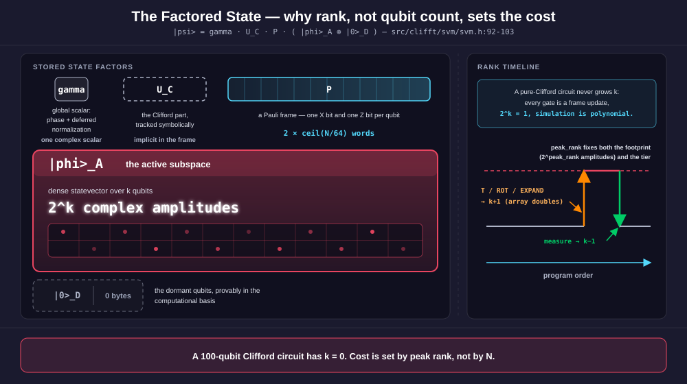
The peak rank of a compiled circuit — the
maximum k over the whole program — determines both the memory footprint and, as
§3 shows, which GPU execution strategy is even viable.
| family | n | opcodes | cost |
|---|---|---|---|
| Frame | 6 | FRAME_{CNOT,CZ,H,S,S_DAG,SWAP} |
O(1) — two bit reads, two bit XORs. No amplitude touched. |
| Array | 13 | ARRAY_{CNOT,CZ,SWAP,MULTI_CNOT,MULTI_CZ,H,S,S_DAG,T,T_DAG,ROT,U2,U4} |
O(2^k) — a sweep over amplitude groups. |
| Expansion | 4 | EXPAND, EXPAND_T, EXPAND_T_DAG, EXPAND_ROT |
O(2^k) and grows k |
| Measurement | 5 | MEAS_DORMANT_*, MEAS_ACTIVE_*, SWAP_MEAS_INTERFERE |
dormant O(1); active O(2^k) reduction, shrinks k |
| Forced variants | 5 | the five *_FORCED mirrors |
synthesized at runtime by bytecode rewrite; read outcome from a side buffer |
| Classical / noise | 8 | APPLY_PAULI, NOISE, NOISE_BLOCK, DETECTOR, … |
O(1)–O(words), but PRNG-consuming |
backend.h:25-86, plus the NUM_OPCODES sentinel)
The count matters later: 41 arms that a CPU interpreter must dispatch over, and that a specialized kernel never dispatches over at all.
struct alignas(32) Instruction {
Opcode opcode; // offset 0
uint8_t _reserved; // offset 1
uint8_t flags; // offset 2
uint8_t _pad; // offset 3
uint16_t axis_1; // offset 4 virtual axis
uint16_t axis_2; // offset 6 virtual axis 2
union { // offsets 8..31
struct{ double weight_re, weight_im; } math; // A
struct{ uint32_t classical_idx, expected_val; } classical; // B
struct{ uint32_t cp_mask_idx, condition_idx; } pauli; // C
struct{ uint64_t mask; } multi_gate;// D
struct{ uint32_t cp_idx; } u2; // E
struct{ uint32_t cp_idx; } u4; // F
struct{ uint32_t cp_exp_val_idx, exp_val_idx; } exp_val; // G
uint8_t raw[24];
};
};
static_assert(sizeof(Instruction) == 32, "exactly 32 bytes");backend.h:92). Asserted, not assumed (:163).uint32_t index. Anything that does
not fit in 24 bytes — fused 2×2 and 4×4 unitaries, N-bit Pauli masks,
noise-channel tables — lives in a side ConstantPool.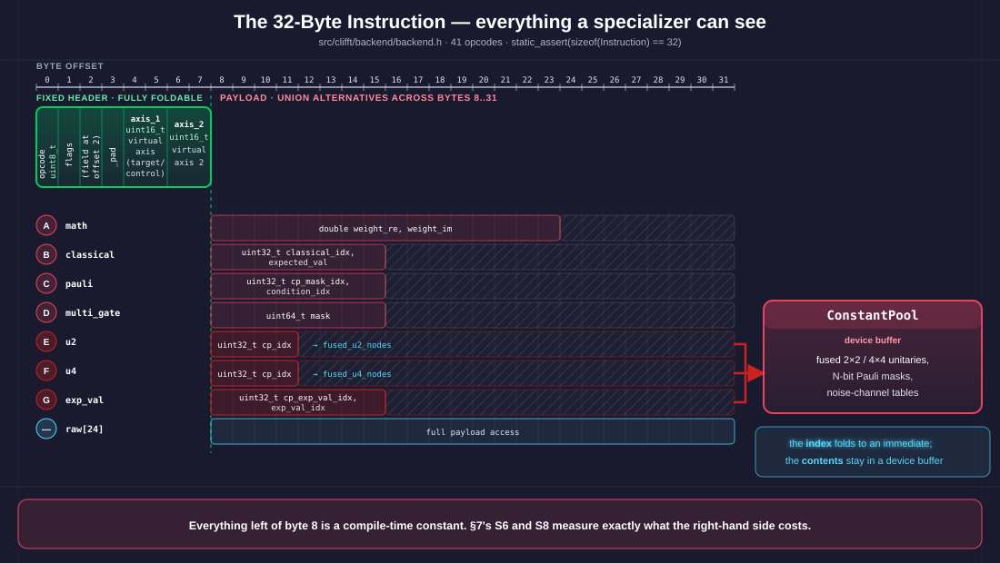
The CPU reference uses a computed-goto threaded dispatch table
(svm_kernels.inl:2191-2196), sized to 256 so each of the 41 opcodes gets its own
indirect-branch history entry:
// Threaded dispatch table (computed gotos) gives each opcode its own
// indirect-branch history entry, dramatically improving prediction.
// Sized to 256; designated initializers map enums directly to labels.
static const void* dispatch_table[256] = {
[static_cast<uint8_t>(Opcode::OP_FRAME_CNOT)] = &&L_OP_FRAME_CNOT,
[static_cast<uint8_t>(Opcode::OP_FRAME_CZ)] = &&L_OP_FRAME_CZ,
...
};#if defined(__GNUC__) guard exists because someone decided the win justified maintaining
a portability fallback.svm.h:148-150// CRITICAL: Do NOT use std::uniform_real_distribution
// -- its output is implementation-defined and varies
// across compilers (GCC vs Clang vs MSVC).
[[nodiscard]] double random_double() {
return (double)(rng_() >> 11) * 0x1.0p-53;
}v2_ops.h:155-177static inline u64 rng_next(u64* s) {
u64 result = v2_rotl64(s[0] + s[3], 23) + s[0];
u64 t = s[1] << 17;
s[2] ^= s[0]; s[3] ^= s[1]; s[1] ^= s[2]; s[0] ^= s[3];
s[2] ^= t; s[3] = v2_rotl64(s[3], 45);
return result;
}
static inline double rng_uniform(u64* s) {
return (double)(rng_next(s) >> 11) * 0x1.0p-53;
}ocml call. No device-library dependency. No fast-math-sensitive
arithmetic. The conversion is an integer shift and an exact power-of-two multiply, so it is
bit-identical on any target with IEEE doubles.ARRAY_U2 applies a 2×2 complex matrix to 2^(k−1) amplitude
pairs; ARRAY_U4 a 4×4 to 2^(k−2) quadruples.SQ_INSTS_MFMA is 0.0 in every
counter block collected, all 52 backend×circuit cells of job 50793, none missing.for(pc) switch// hip_sampler.hip:728-731
__device__ void execute_shot(const GpuProgram& program, Rng& rng, ShotState& st) {
for (uint32_t pc = 0; pc < program.num_instrs; ++pc) {
const GpuInstr& instr = program.instrs[pc];
switch (instr.opcode) {
case OP_FRAME_CNOT: frame_cnot(st, instr.axis_1, instr.axis_2); break;
case OP_FRAME_CZ: frame_cz (st, instr.axis_1, instr.axis_2); break;
...Note what the CPU's computed-goto trick has become: a plain switch.
There is no indirect-branch predictor on a GPU to reward threading the dispatch.
instr.axis_1, instr.flags, instr.mask —
all read from memory, every shot, every instruction.st.active_k is a runtime variable1u << (st.active_k - 1)
at runtime, and every scatter index is recomputed per amplitude.| tier | rank | topology | amplitude storage | source |
|---|---|---|---|---|
| register | ≤ 4 | 1 shot per thread | GpuComplex v[16] in VGPRs |
hip_sampler.hip:153,1778 |
| coop | 5–10 | 1 shot per workgroup (256 threads) | __shared__ GpuComplex v[1024] |
hip_sampler.hip:1861 |
| global | 11–26 | persistent workgroup pool, work-stealing | HBM slice per workgroup | hip_sampler.hip:1937 |
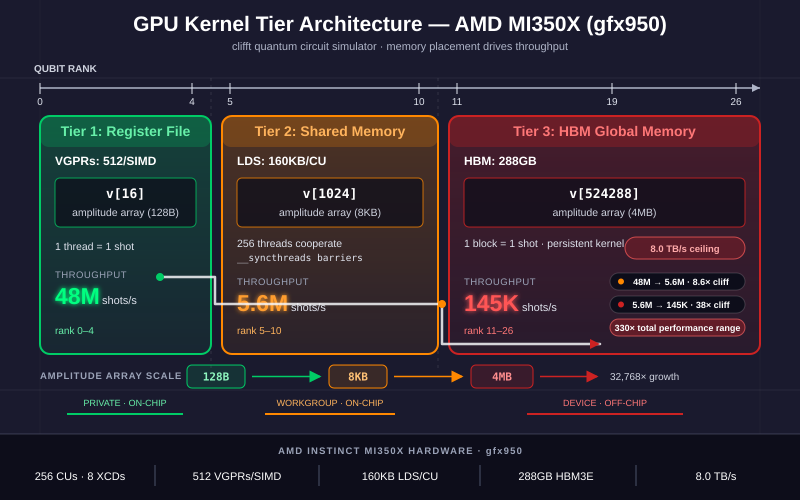
kThreadMaxPeakRank = 4,
kSharedMaxPeakRank = 10, kGlobalMaxPeakRank = 26
(gpu_types.h:8-18).// hip_sampler.hip:1861-1885 One workgroup = one shot; 256 threads cooperate.
__shared__ GpuComplex v[kSharedMaxAmplitudes]; // 1024 amps = 8 KB
__shared__ GpuComplex scratch[kSharedMaxAmplitudes/2]; // 512 amps = 4 KB
__shared__ uint8_t meas[kMaxMeas]; // 4096 slots = 4 KB
__shared__ uint64_t px[kPauliWords], pz[kPauliWords];
__shared__ double red0[256], red1[256]; // = 4 KB
__shared__ uint32_t scatter_lut[kSharedMaxAmplitudes/2];scatter_lut(axis1, axis2, k, mode). This is a runtime answer to the same problem V2
answers at compile time (§7.5).Active-qubit measurement needs sum |v_i|^2 over each half of the array —
a reduction across all 256 threads. Both backends implement the identical two-phase pattern
(hip_sampler.hip:948, mirrored in v2_ops.h:224-262).
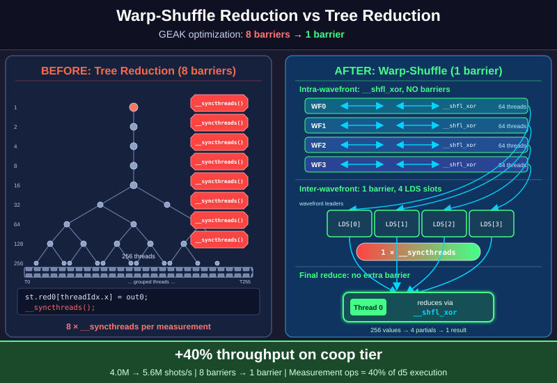
ds_bpermute. Phase 2: the four wavefront partials combine through LDS.v2_ops.h:235-236):
// MUST reproduce SVM coop_reduce2's exact summation order or f64 rounding diverges at measurement
branch points. — The summation order is part of the ABI. A reduction is not
associative in floating point; two implementations summing the same values in different orders differ in
the last bits, and a measurement near the sampling threshold then branches differently, which per
§2.4 desynchronizes the PRNG forever. This single constraint rules out most of the obvious
optimizations one would reach for.Worth stating plainly, because two successor generations failed to beat it:
svm-opt-1-noinline-extendedsvm-opt-2-noinline-coop-sweepssvm-opt-3-geak-warp-shufflesvm-opt-4-scatter-lutnoinline for register pressure, a GEAK-derived warp-shuffle reduction, and the
scatter LUT.| known at compile time | paid at runtime, every shot |
|---|---|
the opcode at each pc | a switch — scalar branch-target computation |
axis_1, axis_2, flags, mask index |
a 32-byte instruction load + field extraction |
active_k before each instruction |
a load, then 1u << (k-1) for every trip count |
| the scatter-index pattern for fixed axes | scatter_bits_2() per amplitude — or an LDS LUT with a cache-validity check |
| which of a measurement's two paths is live | both paths emitted, one predicated |
If the operands are known when the circuit is compiled, generate a bespoke kernel per
circuit. The Hybrid backend (src/clifft/gpu/codegen/) walks the bytecode, emits HIP source
with the operands as literals, and compiles it ahead of the sampling run.
kernel_codegen.h:17-50UsedFunctions struct with one boolean per opcode family, populated by
scanning the bytecode, used to emit only the device functions the circuit actually needs.
ARRAY_U4 code at all.kernel_cache.cc:105-170// Step 1: Compile HIP source -> offload bundle (.bundle)
// --offload-device-only produces a Clang Offload Bundle, not a raw ELF.
// HSA needs a raw AMDGCN ELF, so we unbundle in step 2.
cmd << clangpp << " -x hip"
<< " --offload-arch=" << gpu_arch
<< " -O2 -ffast-math"
<< " --offload-device-only"
<< " -o " << bundle_path << " " << tmp_src;
// then: clang-offload-bundler --unbundle -> hsa_load_kernel(...) :191-ffast-math-ffp-contract=off, no fast-math, §6.4).| circuit | SVM | Hybrid | MLIR (v1) |
|---|---|---|---|
frame_h | 0.066 | 0.053 | 0.271 |
qv10 | 0.074 | 0.058 | 3.54 |
circuit_d5 | 0.078 | 0.065 | 1.22 |
surface_d9_t10 | 0.090 | 0.112 | 5.50 |
sample_seconds (host wall time including setup), not isolated
kernel time, from a run whose node identity was not recorded. The shape is what matters:
Hybrid tracks SVM within ±25%, and MLIR is off the chart. That shape is corroborated by every
later measurement.The cleanest diagnosis is an artifact built for this report —
V2_performance/lowering/ir_density.csv, lines of emitted source per bytecode instruction.
| circuit | instrs | Hybrid HIP lines | lines/instr |
|---|---|---|---|
reg_circuit_d3 | 344 | 5,301 | 15.4 |
coop_qv10 | 140 | 7,805 | 55.8 |
coop_circuit_d5 | 1,720 | 33,508 | 19.5 |
coop_surface_d7_t10 | 4,134 | 75,409 | 18.2 |
glob_surface_d7_t19 | 4,296 | 75,794 | 17.6 |
Hybrid proved per-circuit code generation was possible but not profitable. V1's hypothesis: the problem is the intermediate representation.
EXPAND/MEAS rank algebra;amdgpu.bytecode
→ mlir_emit.cc (~3,425 lines)
→ .mlir text
→ mlir-opt --canonicalize --cse \
--convert-func-to-llvm
→ mlir-translate --mlir-to-llvmir
→ opt -O2 → llc → ld.lld
→ .hsacollvm dialectA dialect census on the emitted IR
(lowering/v1/frame_h.1_emitted.mlir, circuit_d3.1_emitted.mlir):
| dialect op | frame_h | circuit_d3 |
|---|---|---|
func.func | 0 | 0 |
arith.* | 0 | 0 |
scf.* | 0 | 0 |
memref.* | 0 | 0 |
llvm.func | 6 | 7 |
frame_h module is
llvm.mlir.constant×240, llvm.ptr×192,
llvm.shl×73, llvm.xor×68… Pointer arithmetic and
bit twiddling, written in MLIR's syntax.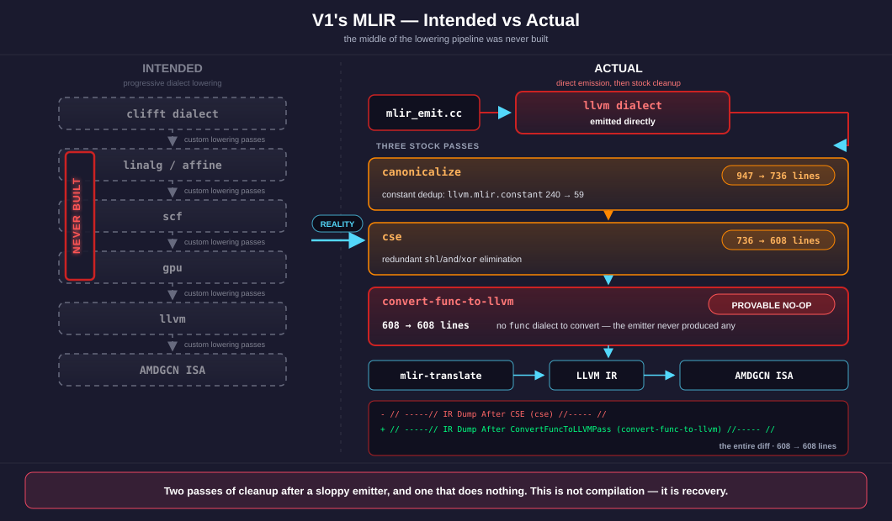
llvm-dialect emission, three stock
passes, one of them a no-op. The middle levels were never built.mlir_codegen.cc:65-67 — and verbatim again at :172 and
:239 — runs exactly three stock upstream passes:
mlir-opt --canonicalize --cse --convert-func-to-llvmllvm was ever defined, so there was nothing to lower
from.EXPAND/MEAS rank tracking — the one genuinely
domain-specific analysis in this problem — was never written as a pass. V2 does it in
the emitter (§7.2).Per-pass snapshots via mlir-opt --mlir-print-ir-tree-dir
(lowering/v1_passes/frame_h/). This is the complete diff — nothing
elided:
func dialect to convert, because the emitter never produced
any.V2_performance/lowering/diffs/v1pass.frame_h.1_cse__2_convert-func-to-llvm.{diff,html}.
This is the honest answer to "show the MLIR progressive lowering": for V1 there is exactly one pass
boundary worth diffing, and the diff is empty. §8 shows where real lowering diffs
do exist.Not nothing — but read what kind of work it is. On frame_h:
llvm.mlir.constant: 240 → 59) and
redundant shl/and/xor elimination.The choice of IR was not V1's problem. The problem is structural and visible
at mlir_emit.cc:2377:
out << " // --- Instruction sequence (" << flat.instrs.size() << " ops) ---\n";
g_emit_ak = 0;
for (size_t pc = 0; pc < flat.instrs.size(); ++pc) {
const GpuInstr& ins = flat.instrs[pc];for loop is on the host, at emit timepc is a C++ variable that never appears in the generated program.
Every bytecode instruction becomes its own block of IR, so the program counter is resolved by
the code generator and the GPU never has one. A circuit is not data walked at runtime; it
is code.v2_op_expand(st, v, 3u);for over the instruction array. Same loop,
different side of the compile.| effect | measured | source |
|---|---|---|
| IR size | surface_d11_t5 (16,432 ops) →
19,856,511 bytes of LLVM IR | results/d11err_49530.log:19 |
| Compile time | glob_surface_d7_t19: 221.48 s
end-to-end | lowering/matrix.csv |
| Optimizer viability | size-adaptive fallback: >4 MB → llc -O2 +
opt -O1; >16 MB → llc -O1, opt skipped
entirely | mlir_kernel_cache.cc:105-131 |
| Register allocation | one enormous basic-block chain; the allocator has no loop structure to work with | — |
The third row deserves emphasis. The build system had to detune the optimizer based on file size to make links complete at all — the constants are literal in the source:
size_t ir_bytes = llvmir.size();
const size_t kLargeIrThreshold = 4u * 1024 * 1024; // 4 MB
const size_t kHugeIrThreshold = 16u * 1024 * 1024; // 16 MB
bool large_ir = ir_bytes > kLargeIrThreshold;
bool huge_ir = ir_bytes > kHugeIrThreshold;
const char* llc_opt = huge_ir ? "-O1" : (large_ir ? "-O2" : "-O3");mlir_kernel_cache.cc:88-92, six lines above the thresholds — this is
V1's failure diagnosed correctly, in V1's own source tree:
// Large fully-unrolled circuits (surface codes emit 40MB+ IR from U2/U4
// inlining) make opt -O3 + llc -O3 take >300s. For large/huge IR we lower the
// opt level (and skip the separate opt pass) so compilation completes.
// Correctness is unaffected — only optimization aggressiveness changes.And the detuning was not sufficient. On surface_d11_t5 the
pipeline ran to completion and still produced nothing loadable:
.hsaco does not
exist.surface_d11 quirk — and it is not rankThe 10-shot correctness sweep across the whole corpus
(results/fullsweep_49529.log, job 49529): 18 circuits pass, and the five that fail all
fail the same way.
surface_d11_t5 fails at rank 3; surface_d9_t19 passes at
rank 13. The failures are not the high-rank circuits — rank drives state size,
and V1's global tier handled rank 13 fine.What the five share is emitted IR volume = instruction count × per-instruction density — and they arrive there by two different routes:
| failing circuit | instrs | density driver | est. IR |
|---|---|---|---|
surface_d11_* | 16,432 | ordinary (~56 lines/instr) | 19.9 MB, measured |
qv20_seed42 | 418 | U2/U4-dense (qv10: 2,407 lines/instr) | ~1.0 M lines |
surface_d11_t5 is long and ordinary.
qv20_seed42 is short and dense — 418 instructions, but a QV circuit is
nearly all fused unitaries. Different route, same wall. Both routes are closed by the same fix.Two bloat sources were mitigated (reference_v1.md:243-250). Read
what the fixes actually are:
OP_NOISE_BLOCK: unroll → runtime loopcircuit_d5, ~100k lines / 32 MB of IR that OOM'd llc. Converted to a
runtime loop over the site index.log(x) / draw_next_noise: inline → callsurface_d9_t5: 1,444
draws × ~110/~317 lines each. Hoisted to shared @clifft_log /
@clifft_draw_next_noise functions.And the unmitigated case is spectacular
(mlir_emit.cc:1813,1920):
| opcode | unrolls per… | branches | IR ops per instruction |
|---|---|---|---|
OP_ARRAY_U2 | incoming-frame-state branch | 4 | ~150–200 |
OP_ARRAY_U4 | incoming-frame-state branch | up to 16 | ~800–1,500+ |
mlir_kernel_cache.cc:89-90 records the outcome in one clause: "surface codes emit
40MB+ IR from U2/U4 inlining."V2_performance/lowering/ir_density.csv — lines of emitted MLIR per
bytecode instruction:
| circuit | instrs | v1 MLIR lines | lines/instr |
|---|---|---|---|
reg_frame_h | 4 | 947 | 236.8 |
reg_four_t | 11 | 1,384 | 125.8 |
reg_circuit_d3 | 344 | 23,002 | 66.9 |
coop_qv10 | 140 | 336,988 | 2,407.1 |
coop_circuit_d5 | 1,720 | 118,493 | 68.9 |
coop_surface_d7_t10 | 4,134 | 228,544 | 55.3 |
glob_surface_d7_t19 | 4,296 | 239,803 | 55.8 |
qv10: 140 instructions → 336,988 lines of MLIR.
V2 emits 179 lines for the same circuit, identical semantics.qv10 — anomalous by a factor of 35
against its neighbours.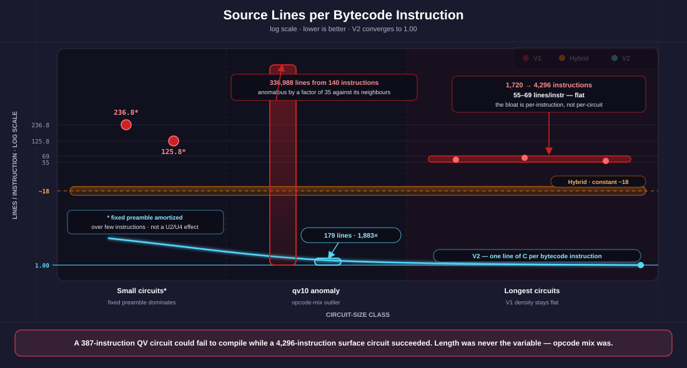
The design doc quotes four rows; the primary artifact
(results/perf2_49532.log:5-15, job 49532) has nine, reproduced in full because
the two outliers are the argument:
| circuit | rank | SVM_s | HYB_s | MLIR_s | MLIR/HYB |
|---|---|---|---|---|---|
frame_h | 0 | 0.0658 | 0.0534 | 0.2712 | 5.1× |
circuit_d3 | 4 | 0.0729 | 0.0552 | 0.4509 | 8.2× |
surface_d7_t5 | 3 | 0.0790 | 0.0781 | 2.1165 | 27.1× |
qv10 | 10 | 0.0741 | 0.0576 | 3.5449 | 61.5× |
circuit_d5 | 10 | 0.0778 | 0.0649 | 1.2230 | 18.9× |
surface_d7_t10 | 7 | 0.0794 | 0.0783 | 2.4039 | 30.7× |
surface_d7_t19 | 12 | 0.0839 | 0.0827 | 2.5316 | 30.6× |
surface_d9_t10 | 7 | 0.0896 | 0.1117 | 5.5035 | 49.3× |
surface_d9_t19 | 13 | 0.1018 | — | aborted | — |
sample_seconds (host wall, not kernel time), node unrecorded,
superseded toolchain. Not comparable to §15's ratios, which are kernel-time on a pinned node.
The shot count is not recorded either — the log preserves the harness command only for the
run that aborted. Treat the ratios as the finding and the absolute seconds as
unnormalized.qv10 is the outlier in both columnssurface_d9_t19 aborted under a 250-second timeout. The log records
the harness command verbatim:timeout 250 "$BIN" --circuit "$f" \
--shots 10 --seed 42 --mlirDetected 7 oom_kill events — the wall V1
hit here is memory as much as time.reference_v1.md:265 states that "the register-tier kernel reports
private = 115 KB/thread" of spill scratch. The number is real. The tier is wrong.
| v1 kernel | max recorded private= |
|---|---|
compiled_mlir_kernel (register) | 4,192 B |
compiled_mlir_kernel_coop | 608 B |
compiled_mlir_kernel_global | 115,224 B |
surface_d7_t19 — 27× the worst register-tier figure.llc
-O0 with opt skipped, because 9,967,049 bytes of IR tripped the huge-IR
fallback.
Independently measured ISA-level resources at -O2 (the level the matrix
uses, not the fallback), from lowering/matrix.csv:
| v1 circuit | tier | ScratchSize | VGPR | occupancy |
|---|---|---|---|---|
reg_frame_h | register | 0 B | 16 | 8 |
reg_four_t | register | 0 B | 16 | 8 |
reg_circuit_d3 | register | 156 B | 128 | 4 |
coop_qv10 | coop | 0 B | 53 | 8 |
coop_circuit_d5 | coop | 48 B | 73 | 6 |
glob_surface_d7_t19 | global | 320 B | 128 | 4 |
circuit_d3 pins 128 VGPRs, the architectural
maximum, and drops to occupancy 4, while the two small circuits sit at 16 VGPRs and occupancy 8.
The unrolled body does exhaust the register file. It just does so by saturating
VGPRs on the register tier rather than by spilling 115 KB, and spills catastrophically only once it
reaches the global tier with the optimizer disabled.Note which way the trade-off runs (mlir_emit.cc:216-218):
// alignment=8 for coop/global tiers enables ds_read_b64 / global_load_b64
// EXCLUDED from register tier to avoid VGPR spill catastrophe (P1.9)
const char* align = (lds_amplitudes || cooperative_mode) ? " {alignment = 8 : i64}" : "";ds_read_b64 /
global_load_b64 halve the number of memory instructions — accepted purely to
keep the allocator from spilling.matrix.csv's register rows for a
global-tier number. Design documents are claims rather than facts, but so is any single artifact
read in isolation.By V1, every opcode was implemented three to four times — with register
and coop variants doubling several of those. A fix in one did not propagate. Tracing a single opcode,
MULTI_CNOT:
| file | role |
|---|---|
svm/svm_kernels.inl | CPU + GPU SVM interpreter (the de-facto spec) |
gpu/sampler/hip_sampler.hip | GPU SVM dispatch |
gpu/codegen/ops/multi_qubit_ops.inc | Hybrid HIP-source emitter |
gpu/mlir/ops/mlir_array_ops.inc | V1 MLIR emitter — where the bug was |
gpu/mlir/v2/v2_ops_body.inc | V2 shared operand library |
OP_ARRAY_MULTI_CNOT had px/pz swapped
only in the MLIR frame update, while SVM and Hybrid were correct — corrupting the frame
for every controlled measurement that followed.The post-mortem is still inline at
src/clifft/gpu/mlir/ops/mlir_array_ops.inc:428-435:
// SVM ref exec_array_multi_cnot -> exec_frame_cnot (svm_kernels.inl:502/exec_frame_cnot).
// NOTE: read pz[target] ONCE up front — the per-control pz[c] ^= pz[target]
// never touches pz[target] (target is not a control), so it stays stable;
// likewise accumulate Σ px[c] before writing px[target]. (The previous
// emission had px/pz swapped here, corrupting the frame for controlled
// measurements that follow — the circuit_d5 coop MX bug.)v2_ops.h) compiled two ways
(§6.2), which makes the interpreter and the specialized kernel byte-exact by
construction rather than by testing.surface_d11_t5 — V1 produced 19.9 MB of IR and no
loadable binary. V2's cache holds a specialized kernel for it with
vgpr_spill = 0, and §15 reports surface_d11_t19 at
0.255× SVM — the best result in the corpus, on a circuit its predecessor
could not compile.V1's disease was unrolling the operand sequence. The naive lesson —
"don't unroll anything" — is wrong, and would give up the entire specialization
opportunity. docs/v2/V2.md:104-132 is precise about three different loops with three
different rules:
| loop | rule | why |
|---|---|---|
| over shots | ALWAYS a runtime loop | shots are data; a persistent kernel with work-stealing pulls them |
| over the bytecode | ALWAYS a runtime loop* | the operand sequence is data; unrolling it is the disease |
| over amplitude groups | stays a loop, but bounds/constants may specialize | at rank 10 that is 256–512 groups; flattening reinstates the bloat |
| the 2×2 / 4×4 butterfly | fully unrolled | a constant 4–16 multiply-adds; no size risk |
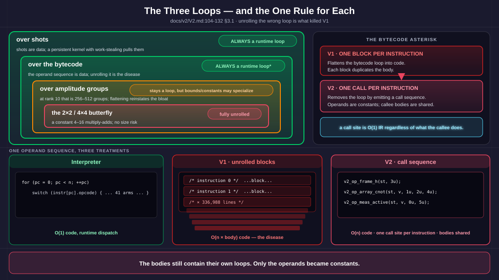
vgpr_spill = 0. The bodies are shared, so the code the optimizer sees is bounded by
the opcode set, not by the circuit.The substrate is v2_ops.h + v2_ops_body.inc: every opcode
body as a static inline function taking its operands and the pre-op
active_k by value.
static inline void v2_op_array_cnot(V2State* st, CV2Complex* v,
u32 active_k, u32 a1, u32 a2);
static inline void v2_op_meas_dormant_static(V2State* st, u32 axis,
u32 slot, u32 flags);That signature is the whole trick. The same source serves two consumers:
coop_interpreter.cv2_op_array_cnot(st, v, st->active_k,
in.axis_1, in.axis_2)v2_specializer.ccv2_op_array_cnot(st, v, 8u, 2u, 5u)v2_ops.h:128-152, verbatim with the barrier body elided to
§11.2:
#ifdef V2_REGISTER
# define V2_STRIDE 1u
static inline u32 v2_tid(void) { return 0u; }
static inline void v2_barrier(void) {} // no cooperation, no barrier
# define V2_REDUCE2(T, L0, L1, O0, O1) do { *(O0) = (L0); *(O1) = (L1); } while (0)
# define IS_OWNER 1
#else
# define V2_STRIDE 256u
static inline u32 v2_tid(void) { return __builtin_amdgcn_workitem_id_x(); }
static inline void v2_barrier(void) { /* release fence; s_barrier; acquire fence — §11.2 */ }
# define V2_REDUCE2(T, L0, L1, O0, O1) coop_reduce2((T), (L0), (L1), (O0), (O1))
# define IS_OWNER (t == 0)
#endifV2_REDUCE2 in the register tier is not a stub for "reduction
not needed" — it is an assignment. A stride-1 loop over all amplitudes has already
accumulated both partial sums into L0/L1, so the cross-lane reduction
degenerates to a copy. Same call site, same argument list, two different meanings, zero
runtime branch.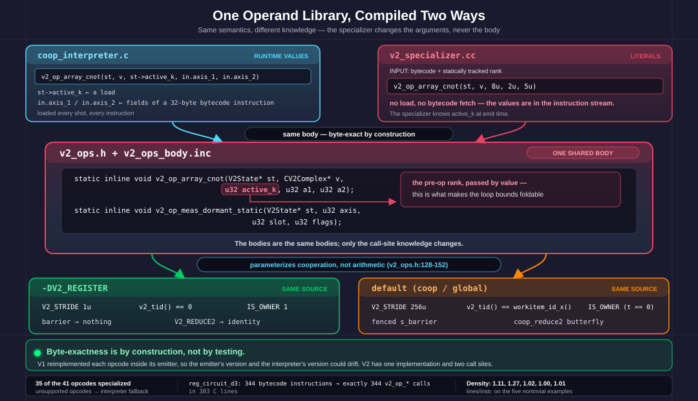
static inline bodies; only the call-site knowledge differs, so byte-exactness
is by construction rather than by testing. The tier macros below the library parameterize
cooperation, not arithmetic. 35 of the 41 opcodes are specialized; unsupported opcodes
fall back to the interpreter.v2_specializer.cc:26-97 is a switch over opcodes that prints
exactly one line each. Register-tier circuit_d3
(lowering/v2_src/reg_circuit_d3.c, 383 lines for 344 instructions), verbatim with
… marking elisions:
#define V2_REGISTER 1
#define V2_NOISE_ATTR __attribute__((noinline))
#include "clifft/gpu/mlir/v2/v2_ops.h"
…
v2_shot_init(st, v, amp_capacity, shot_id, num_observables, seed, noise_hazards, num_noise_sites);
v2_op_meas_dormant_static(st, 6u, 33u, 0u);
v2_op_meas_dormant_static(st, 8u, 32u, 0u);
v2_op_meas_dormant_random(st, 13u, 30u, 0u);
…
v2_op_noise_block(st, noise_sites, noise_channels, noise_hazards, num_noise_sites, 0u, 131u);
v2_op_frame_cnot(st, 3u, 10u);
v2_op_frame_cz(st, 3u, 6u);
v2_op_frame_swap(st, 3u, 0u);
v2_op_frame_h(st, 0u);
v2_op_expand_t(st, v, 0u, 0u, 1); // <- active_k = 0, tracked statically
…
v2_shot_aggregate(st, block_counts, num_observables, expected_obs_mask);
}v2_op_* call statements — one per bytecode instruction, no more and no fewer. The
39 non-call lines are the 14-line spec_body signature, the
v2_shot_init/v2_shot_aggregate bracket, and a 21-line kernel wrapper.Note v2_op_expand_t(st, v, 0u, 0u, 1): the third argument is
active_k, which the specializer tracks as it walks the program. Every
rank-changing case both prints the current *k and updates it
(v2_specializer.cc:42-56):
case Opcode::OP_EXPAND:
o << "v2_op_expand(st, v, " << *k << "u);"; ++*k; break;
case Opcode::OP_EXPAND_T:
o << "v2_op_expand_t(st, v, " << *k << "u, " << a1 << "u, 0);"; ++*k; break;
…
case Opcode::OP_MEAS_ACTIVE_DIAGONAL:
o << "v2_op_meas_active_diagonal(st, v, " << *k << "u, " << a1 << "u, "
<< a << "u, " << flags << "u);";
if (*k) --*k; break;st->active_k after
every rank-changing op; the specializer knows it at emission time. §7.5 measures what
that alone is worth — it is the largest of the eight classes.OP_FRAME_S and OP_FRAME_S_DAG emit the same
call (v2_specializer.cc:35-36); so do
OP_ARRAY_S/_S_DAG and OP_ARRAY_T/_T_DAG,
differing only in a literal 0/1 dagger flag — which the optimizer
then resolves into two distinct specializations of each body.OP_DETECTOR takes no arguments at allv2_op_detector();. The detector's work is entirely
compile-time in the specialized path — the interpreter's version has to read operands
to discover there is nothing to do.OP_POSTSELECT is the one case that emits control flowif (v2_op_postselect(...)) return; — a shot that fails
post-selection exits spec_body directly, with no flag to test at the next
instruction. The interpreter carries that flag for the rest of the program.*_FORCED variants and OP_EXP_VAL — return false, which
aborts emission and falls the whole circuit back to the interpreter
(v2_specializer.cc:92-93). Unsupported is safe, not fatal.| circuit | instrs | v2 C lines | lines/instr |
|---|---|---|---|
reg_frame_h | 4 | 43 | 10.75 |
reg_four_t | 11 | 49 | 4.45 |
reg_circuit_d3 | 344 | 383 | 1.11 |
coop_qv10 | 140 | 179 | 1.27 |
coop_circuit_d5 | 1,720 | 1,760 | 1.02 |
coop_surface_d7_t10 | 4,134 | 4,174 | 1.00 |
glob_surface_d7_t19 | 4,296 | 4,346 | 1.01 |
The directory is named mlir/v2/. That name is the only MLIR left in
V2. v2_specializer.cc:127 emits a C translation unit;
v2_compile_cache.cc:151-176 compiles it with the raw LLVM toolchain:
// 1) C -> amdgcn bitcode. Flags IDENTICAL to the build-time interpreter pipeline.
clang --target=amdgcn-amd-amdhsa -mcpu=gfx950 \
-ffreestanding -nostdlib -nogpulib -std=c23 -O2 -ffp-contract=off \
-emit-llvm -c -o spec.bc spec.c
// 2) link ocml + oclc controls (identical set to ClifftAmdgcn.cmake)
llvm-link -o linked.bc spec.bc ocml.bc ockl.bc \
oclc_wavefrontsize64_on.bc oclc_daz_opt_off.bc oclc_finite_only_off.bc \
oclc_unsafe_math_off.bc oclc_correctly_rounded_sqrt_on.bc \
oclc_abi_version_500.bc oclc_isa_version_950.bc
opt -O2 -o linked.bc linked.bc // 3
llc -mtriple=amdgcn-amd-amdhsa -mcpu=gfx950 \
-mattr=+wavefrontsize64 -filetype=obj -O2 -o spec.o linked.bc // 4
ld.lld -shared -o spec.hsaco spec.o // 5amdgcn-amd-amdhsa directly and gets a plain ELF from ld.lld.V2_STRIDE 256u and V2_RED_WARPS reduction geometry
are written for 64-lane waves.v2_compile_cache.cc:155-156 carries an instruction to future
maintainers:
-ffp-contract=off, no fast-math-O2 -ffast-mathkernel_cache.cc:115. V2 cannot do this, and the reason is
§2.4: a 1-ULP difference flips a sampling branch and desynchronizes the PRNG
forever. Hybrid got away with it because Hybrid was never byte-compared against the CPU
reference.v2_compile_cache.cc:125-127:
std::string ident = csrc + "|" + llvm_bin("clang") + "|" + arch() + "|" +
bitcode_dir() + "|" + device_header_ident();
size_t h = std::hash<std::string>{}(ident);csrc — the generated C
— which is barely half the translation unit. Every v2_op_* body,
v2_barrier(), and every tunable constant lives in the included headers.
.hsaco
plus its stale .gate verdict silently won. §11.4 documents the
benchmark run this destroyed.v2_ops.h,
v2_ops_body.inc, device_abi.h — go into the key by content.
Specialization is a compiler, and compilers have bugs. V2 does not ask you to
trust it. v2_kernel.cc:370-398 validates each freshly compiled
.hsaco against the interpreter on a shot sample, and persists the verdict to
disk:
// The verdict is written to "<spath>.gate" so it is computed ONCE ever (not
// per process) and NEVER re-run during a profiled sample dispatch -- the
// gate's own validation dispatches would otherwise pollute rocprofv3 traces.
std::string gate_path = spath + ".gate";
if (std::FILE* gf = std::fopen(gate_path.c_str(), "r")) { // disk cache hit
int v = 0; if (std::fscanf(gf, "%d", &v) != 1) v = 0;
validated = (v == 1);
} else { // compute once
validated = specialized_matches_interpreter(program, spath, spec_sym);
}
if (validated) { load_path = spath; sym = spec_sym.c_str(); }
else spec_sym.clear(); // -> interpreterstatic std::map keyed by circuit shape, then the on-disk
.gate file, then the .hsaco itself. The third one exists because
"the gate's own validation dispatches would otherwise pollute rocprofv3 kernel traces."
A correctness check that perturbs the measurement is a correctness check you stop
running.tname + "_r" + peak_rank + "_n" + num_instrs
(v2_kernel.cc:366-367). circuit_d5_p0.001 and cultivation_d5
compile to the same coop_r10_n1720 key when their bytecode has the same rank and
length — so they share one gate verdict and one .hsaco. That is why
§11.1's failure took out a whole family at once.V2_GATE_VERBOSE,
V2_GATE_BISECT — had to be added during §11.2's investigation. A
boolean oracle is enough to be safe and not enough to debug.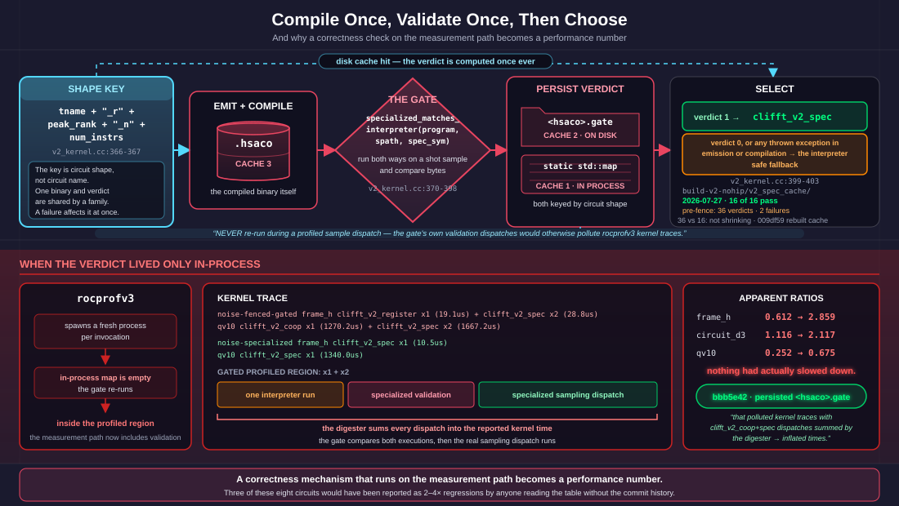
rocprofv3 spawns a fresh process per invocation, so the in-process map is
always empty, the gate re-ran inside the profiled region, and the digester summed all
three dispatches into one reported kernel time. Three of eight circuits would have been read as
2–4× regressions.| cache | verdicts | failures |
|---|---|---|
history/stale_spec_cache_20260725/pre-fence, pre-dust | 36 | 2 |
build-v2-nohip/v2_spec_cache/current HEAD | 16 | 0 |
coop_r10_n1720) now produces a one. §11.2 is the story of what was actually
wrong — and it was not what the first theory said.009df59 changed the key, repopulated only by circuits that have since been
re-run. It was at 6 earlier the same day.device_header_ident doing exactly its job.v2_kernel.cc:358 — unset, V2 runs its bytecode
interpreter.V2_SPECIALIZE unset, a benchmark measures
V2's interpreter against SVM's tuned interpreter and reports what looks like a
2–3× regression.One spec_body, three wrappers
(v2_specializer.cc:172-225). spec_body takes 21 parameters; the first
five are tier-dependent, the remaining 16 identical across tiers — emitted once into a
const char* fwd and reused verbatim, so the tier choice cannot accidentally change
what the body receives.
Every wrapper opens with the same line:
(void)peak_rank; (void)num_instrs; (void)instrs; (void)total_meas_slots;#define V2_REG_MAX_AMP 16
__attribute__((amdgpu_kernel, visibility("default")))
void clifft_v2_spec(...) {
u64 shot_id = shot_offset +
((u64)v2_bid() * 256ul + __builtin_amdgcn_workitem_id_x());
if (shot_id >= shots) return;
V2State st;
CV2Complex vloc[V2_REG_MAX_AMP];
CV2Complex sloc[V2_REG_MAX_AMP/2];
spec_body(&st, vloc, sloc, V2_REG_MAX_AMP, shot_id, ...);
}vgpr_spill = 0.extern __attribute__((address_space(3))) CV2Complex lds_v[V2_MAX_AMP];
extern __attribute__((address_space(3))) CV2Complex lds_red_scratch[V2_SCRATCH_AMP];
extern __attribute__((address_space(3))) V2State lds_state;
void clifft_v2_spec(...) {
u64 shot_id = shot_offset + (u64)v2_bid();
if (shot_id >= shots) return;
spec_body((V2State*)&lds_state, (CV2Complex*)lds_v,
(CV2Complex*)lds_red_scratch, ...);
}address_space(3) and cast at the call —
spec_body itself is address-space agnostic, which is how one body serves all three
tiers.void clifft_v2_spec(..., CV2Complex* global_v, CV2Complex* global_scratch, u64* work_counter) {
u32 t = v2_tid(), slot = v2_bid();
const u64 amp_capacity = 8192ull; // <- 1<<peak_rank, a constant
CV2Complex* v = global_v + (u64)slot * amp_capacity;
CV2Complex* scratch = global_scratch + (u64)slot * (amp_capacity >> 1);
for (;;) {
if (t == 0) lds_shot = __atomic_fetch_add(&work_counter[0], 1UL, __ATOMIC_RELAXED);
v2_barrier();
u64 batch_shot = lds_shot;
if (batch_shot >= shots) return;
spec_body((V2State*)&lds_state, v, scratch, (u32)amp_capacity, shot_offset + batch_shot, ...);
v2_barrier();
}
}amp_capacity is a literal8192ull — not a kernel argument. Every slice-offset multiply becomes a shift, and
every bound is a compile-time constant. That is §7.5 acting on the addressing arithmetic.lds_shot), one after the body (protect the next iteration's
write). §11.2 is what happens when those are execution-only.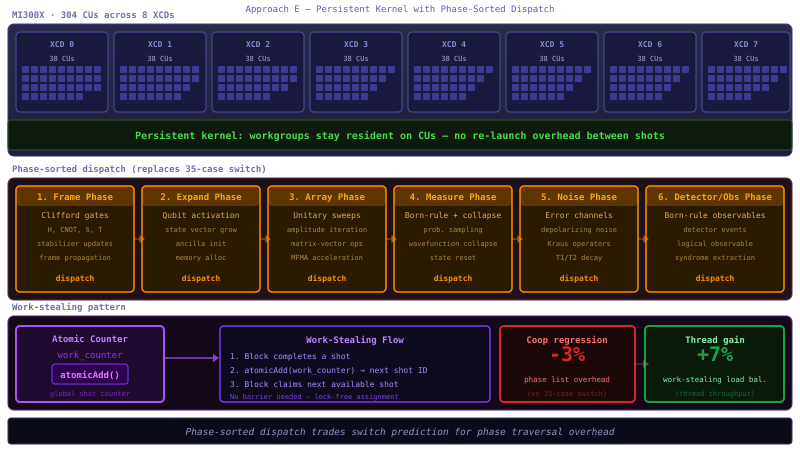
v2_kernel.cc:436-445:
const uint64_t amp = 1ull << flat.peak_rank;
const uint64_t bytes_per_wg = amp * sizeof(GpuComplex) + (amp / 2) * sizeof(GpuComplex);
const uint64_t budget = 32ull << 30; // 32 GB
uint64_t wgs = budget / bytes_per_wg;
if (wgs < 1) wgs = 1; // rank 26+: at least one resident wg
if (wgs > 2048) wgs = 2048;
global_grid_wgs = (uint32_t)wgs;
// Prefer a multiple of the XCD count when the budget allows it, so the
// resident pool spreads evenly; never inflate past the budget.
if (global_grid_wgs > kNumXCDs) global_grid_wgs -= global_grid_wgs % kNumXCDs;GpuComplex is {float re; float im;} — 8 bytes
(gpu_types.h:38-41) — so bytes_per_wg is a slice plus a half-size
scratch: 12 bytes per amplitude. Four clauses, each doing distinct work: the budget divide, a
floor of 1 so rank 26 is possible rather than fast, a ceiling of 2,048, and a
round-down to a multiple of kNumXCDs = 8 so the pool spreads across the device's eight
compute dies.| peak rank | MiB / workgroup | resident workgroups | regime |
|---|---|---|---|
| 11–19 | 0.02 – 6.00 | 2048 | ceiling-limited |
| 20 | 12.00 | 2048 | ceiling-limited (last one) |
| 21 | 24.00 | 1360 | budget-limited |
| 22 | 48.00 | 680 | budget-limited |
| 23 | 96.00 | 336 | budget-limited |
| 24 | 192.00 | 168 | budget-limited |
| 25 | 384.00 | 80 | budget-limited |
| 26 | 768.00 | 40 | budget-limited |
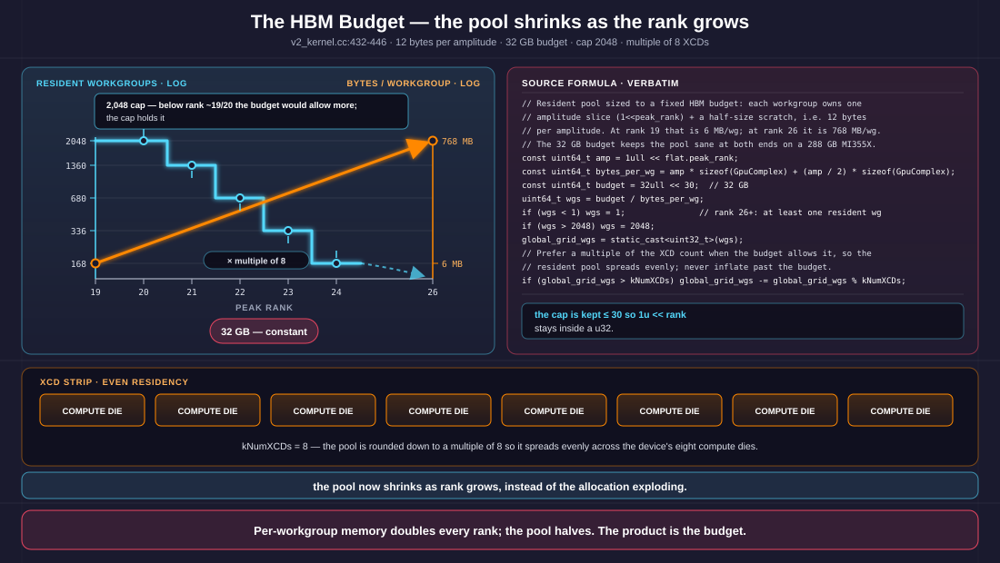
Grid_Size_X ÷ 256, and
§15 shows the performance decay that follows — a geometric loss that is by design, not
a bug. That is why §10 covers what made rank > 19 possible, not what made it
fast.Each case is a single .c file compiled twice from the same
source, calling the identical v2_op_* body out of v2_ops.h:
-DSPEC_FORM=0 — interpreter formCV2Instr loaded from device memory at a
runtime pc, exactly as coop_interpreter.c's for(pc) switch
supplies them.-DSPEC_FORM=1 — specialized formv2_specializer.cc emits for
that instruction.v2_compile_cache.cc.clang --target=amdgcn-amd-amdhsa -mcpu=gfx950 -ffreestanding -nostdlib -nogpulib \
-std=c23 -O2 -ffp-contract=off -I<root>/src -SOne methodology point deserves quoting, because getting it wrong would have inflated
every number in this chapter. From spec_examples/harness.h:
instrs, a plain const CV2Instr* kernel argument indexed by a runtime
pc, which is exactly how coop_interpreter.c's for(pc)switch
supplies them. NOT volatile: marking it volatile would force system-coherent
(sc0 sc1) reads the real interpreter never issues and would overstate the
interpreter's cost. The operands are unknowable at compile time simply because instrs
points at device memory.The harness kernel signature is identical in both builds:
#define CASE_KERNEL_HEAD \
__attribute__((visibility("default"))) __attribute__((amdgpu_kernel)) \
void case_kernel(V2State* st, CV2Complex* v, CV2Complex* scratch, \
const CV2Instr* instrs, u32 pc, \
const CV2FusedU2Entry* fused_u2, ...)
#define IN(n) (instrs[pc + (n)]) // the interpreter's access patternbuild_examples.sh.
Raw output is lowering/spec_examples/stats.csv; the .s files for
both forms of all eight cases are checked in alongside it, and the script reproduces all
sixteen byte-for-byte.The first harness reported an ISA line count — wc -l of the
.s file. That number is dominated by directives, comments, labels and the AMDGPU metadata
block: 199–316 non-instruction lines per case, which for these small kernels is
41–82% of the file.
| Case | line ratio (wrong) | instruction ratio (right) |
|---|---|---|
| S1 | 1.37× | 2.89× |
| S2 | 1.59× | 2.94× |
| S3 | 1.30× | 1.98× |
| S4 | 1.23× | 1.38× |
| S5 | 1.44× | 2.56× |
| S6 | 1.26× | 1.71× |
| S7 | 1.07× | 1.10× |
| S8 | 1.14× | 1.35× |
.directive nor
; comment.; NumVgprs: comment, which LLVM emits as a
symbolic expression (max(56, amdgpu.max_num_vgpr)) for any kernel that calls
an external function.
__ocml_log_f64 — scraped to 0 and
appeared to use no vector registers at all, when it in fact uses 56 in both
forms. And ; NumSgprs: does not appear in this LLVM's output at all (only
; TotalNumSgprs:, itself symbolic), so that column read 0 for all sixteen files.
All three are read from the .set directives now.build_examples.sh:38-42:
/usr/bin/grep here is ugrep, which does not
expand \t inside an ERE when the script runs non-interactively (it does when typed at
a prompt — so this silently counted 0 in batch and the right number by hand)."| Case | Class | Tier | instrs | VALU | VGPR | SGPR | s_load | ds_* | branch |
|---|---|---|---|---|---|---|---|---|---|
| S1 | frame operand folding | register | 136→47 2.89× | 44→8 5.50× | 8→3 | 14→12 | 6→3 | 0→0 | 6→4 |
| S2 | flag folding | register | 206→70 2.94× | 86→19 4.53× | 25→14 | 13→26 | 9→4 | 0→0 | 18→0 |
| S3 | static rank tracking | coop | 164→83 1.98× | 67→27 2.48× | 18→8 | 16→10 | 6→4 | 0→0 | 9→6 |
| S4 | rank-folded reduction | coop | 331→240 1.38× | 139→96 1.45× | 24→14 | 30→26 | 7→5 | 4→4 | 15→7 |
| S5 | scatter-index folding | coop | 207→81 2.56× | 84→33 2.55× | 16→8 | 24→10 | 4→1 | 0→0 | 10→8 |
| S6 | fused-matrix lookup | coop | 147→86 1.71× | 54→42 1.29× | 24→18 | 23→16 | 12→7 | 0→0 | 10→2 |
| S7 | noise runtime loop | register | 447→407 1.10× | 214→210 1.02× | 56→56 | 86→85 | 9→5 | 0→0 | 23→20 |
| S8 | Pauli-mask index | register | 185→137 1.35× | 71→63 1.13× | 22→21 | 44→42 | 17→11 | 0→0 | 3→3 |
An earlier draft claimed the deleted VALU work was replaced by scalar work — "the same computation moved from the vector pipe to the scalar pipe." That claim is wrong, and the data in this very table refutes it. Counting scalar instructions the same way:
| Case | SALU | ratio | VALU | ratio |
|---|---|---|---|---|
| S1 | 74→35 | 2.11× | 44→8 | 5.50× |
| S2 | 93→45 | 2.07× | 86→19 | 4.53× |
| S3 | 84→48 | 1.75× | 67→27 | 2.48× |
| S4 | 133→93 | 1.43× | 139→96 | 1.45× |
| S5 | 102→33 | 3.09× | 84→33 | 2.55× |
| S6 | 83→36 | 2.31× | 54→42 | 1.29× |
| S7 | 177→141 | 1.26× | 214→210 | 1.02× |
| S8 | 87→49 | 1.78× | 71→63 | 1.13× |
circuit_d5 regression in
§11.1, and the corrected register number strengthens that prediction.s_cselects over folded
literals, and those literals have to live somewhere. On the register tier this is a good trade
— SGPRs are not the occupancy limiter there — but it is the one place specialization
measurably costs something, and the reason register and instruction columns must be read
separately.The op. OP_FRAME_CNOT touches only the Pauli frame. Two bit reads,
two bit XORs, at word/bit offsets derived from the axes (v2_ops_body.inc:12-19):
static inline __attribute__((always_inline)) void v2_op_frame_cnot(V2State* st, u32 ctrl, u32 tgt) {
u32 t = v2_tid();
if (IS_OWNER) {
int px_c = fget(st->px, ctrl), pz_tt = fget(st->pz, tgt);
fxor(st->px, tgt, px_c); fxor(st->pz, ctrl, pz_tt);
}
v2_barrier();
}a >> 6 and a & 63 are compile-time — the
word index becomes a fixed offset and the bit becomes a fixed mask.st->px / st->pz.v_movv_mov_b32_e32 v2, 0 supplying the zero address offset and four
v_mov_b64_e32 staging a scalar result for global_store. Not one
arithmetic vector instruction survives. The frame logic has left the vector pipe entirely.
8, 0x400, 0x1000, 64
— bits 3, 10, 12, 6, each exactly where the source says.s_waitcnt vs 15st → frame-word
chain.s_mul_i32 s7, s6, 40 plus a global_load_dword, per
instruction. The bytecode itself is a memory operand.
40 is sizeof(CV2Instr), which device_abi_checks.cc:58 pins
equal to sizeof(GpuInstr). A runtime pc needs a 64-bit product —
hence the s_mul_i32/s_mul_hi_u32 pair and the
s_add_u32/s_addc_u32 that follow.v_readfirstlane_b32global_load whose address is uniform but whose result the compiler must materialize
in a VGPR — so it must be moved to the scalar unit before it can be used as an address.
A cross-pipe transfer per operand.v_lshrrev_b32 / v_and_b32 / v_lshlrev_b64 to
compute the word index and the bit mask. Under specialization these are literals in the
instruction encoding.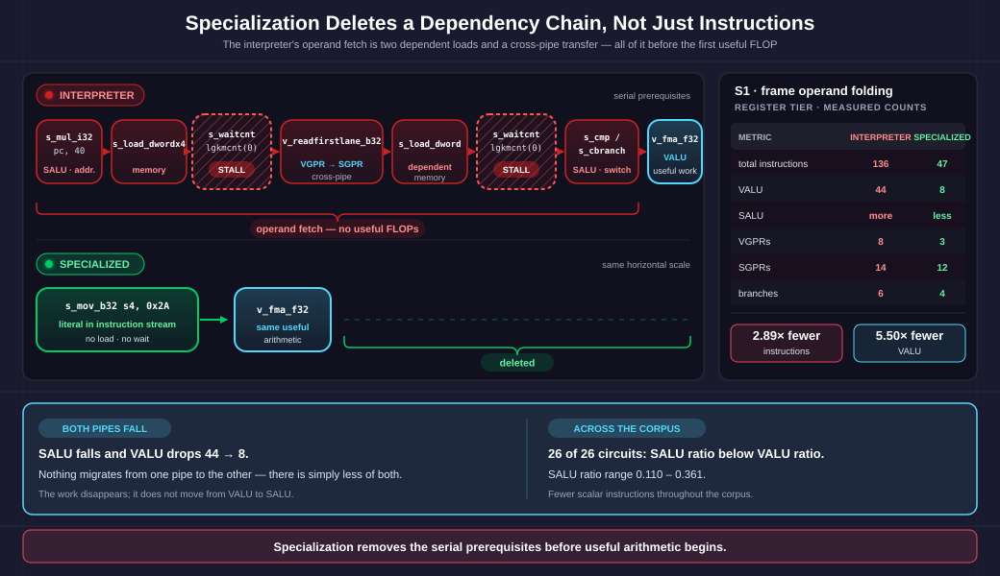
The op. OP_MEAS_DORMANT_STATIC writes a measurement slot without
touching the amplitude array. flags selects between a constant-outcome path and a
frame-read path, and supplies the sign XOR (v2_ops_body.inc:53-65):
static inline __attribute__((always_inline)) void v2_op_meas_dormant_static(V2State* st, u32 axis, u32 slot, u8 flags) {
u32 t = v2_tid();
if (IS_OWNER) {
u8 mval;
if (flags & FLAG_IDENTITY) mval = (flags & FLAG_SIGN) ? 1u : 0u;
else {
u8 outcome = (u8)fget(st->px, axis);
mval = outcome ^ (u8)((flags & FLAG_SIGN) != 0);
}
if (slot < V2_MAX_MEAS) mset(st->meas, slot, mval);
}
v2_barrier();
}flagsslotslot < V2_MAX_MEAS bounds check.mset(st->meas,
slot, ...) on a bit-packed array becomes a fixed word and a fixed mask, exactly as in
S1.grep for s_cbranch or
s_branch over the whole specialized file returns zero — against
18 in the interpreter form. What remains is a straight scalar sequence.spec/S2_meas_dormant.s:49-65, with intervening stores and
v_mov staging elided:
axis/slot, both arms write the same
fixed bit — so the compiler can pick the value rather than the path.
The neighbouring s_bitset0_b32 s12, 13 is the same fold in its purest form:
mset of a constant slot on a bit-packed array is one instruction with the bit
number in the encoding.s_cbranch inside a divergent region forces
s_and_saveexec_b64 / s_or_b64 exec mask manipulation and
serializes the two sides. Eighteen of those in a three-instruction sequence is pure
interpretive overhead — and dormant measurements are extremely common in
surface-code circuits, which is why the surface family shows some of the largest gains in
§14.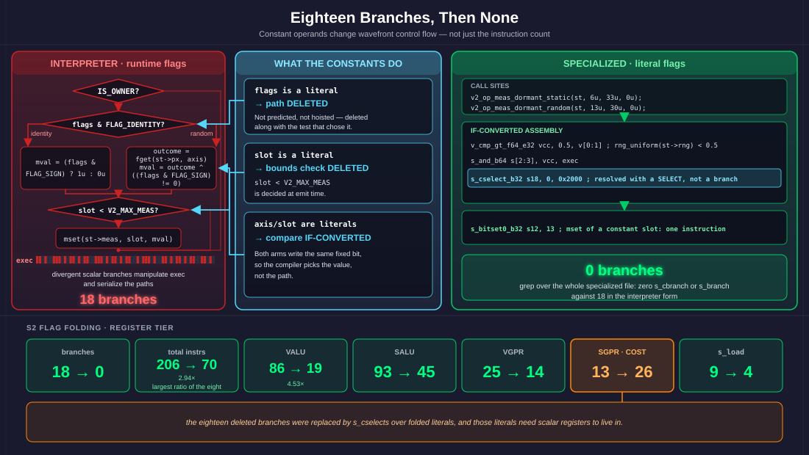
flags deletes a path; a constant slot deletes the bounds check; constant
axis/slot make both arms of the genuinely random compare write the same
bit, so it if-converts to s_cselect_b32. The SGPR rise 13→26 is drawn at the
same weight as the wins — it is the price of straight-lining, not a hidden defeat.The case file's own header comment states the claim:
active_k at every program point, so
half = 1u << active_k becomes a literal and the strided sweep gets a compile-time
trip count. The interpreter must re-read st->active_k after every rank-changing op.
Note what is NOT happening: the sweep is still a LOOP. V1 unrolled it.k as it walkscase Opcode::OP_EXPAND:
o << "v2_op_expand(st, v, " << *k << "u);"; ++*k; break;
case Opcode::OP_MEAS_ACTIVE_INTERFERE:
o << "…, " << *k << "u, …";
if (*k) --*k; break;for (u32 pc = 0; pc < num_instrs; ++pc) {
CV2Instr ins = instrs[pc];
u32 k = st->active_k; // <- a LOAD, every instruction
switch (ins.opcode) {static inline __attribute__((always_inline)) void v2_op_expand_t(V2State* st, CV2Complex* v, u32 active_k, u32 axis, int dagger) {
u32 t = v2_tid();
u32 half = 1u << active_k;
int px = fget(st->px, axis);
double imag = dagger ? -V2_INV_SQRT2 : V2_INV_SQRT2;
if (px) imag = -imag;
CV2Complex phase; phase.re = (float)V2_INV_SQRT2; phase.im = (float)imag;
for (u32 i = t; i < half; i += V2_STRIDE) v[i + half] = cmul(v[i], phase);
v2_barrier();
if (IS_OWNER) st->active_k = active_k + 1;
v2_barrier();
}1u <<
active_k is a constant, so the sweep's trip count is known.dagger makes the ?: and the negate both disappear.v[i + half] gets a constant offset instead of a computed one.s_load accounting: 6→4, but not by simple deletion| load | interp | spec |
|---|---|---|
0x20 — pc | yes | — |
0x18 — instrs | yes | — |
0x0 — kernarg block | yes | yes |
0x278 — st->active_k | yes | — |
| dynamically-indexed frame word | yes ×2 | — |
st->px / phase at fixed offsets | — | yes ×3 |
pc, instrs,
active_k) and both dynamically-indexed frame reads disappear; three
statically-addressed loads appear in their place. Net 6→4 — but every
surviving load in the specialized form has a compile-time address.s_load_dword ..., 0x278 — active_k's offset in
V2State. The specialized form contains none.V2_STRIDE = 256 it is
a handful of iterations; at rank 22 it is thousands.
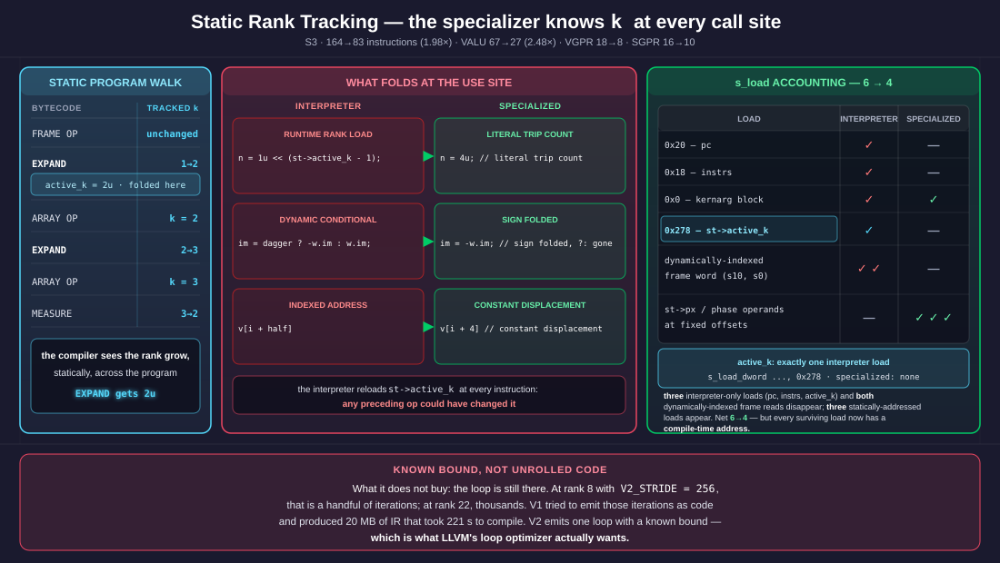
k,
so every rank-dependent bound is a literal at its use site. The interpreter must reload
st->active_k at every instruction because any preceding op could have changed
it.static inline V2_NOISE_ATTR void v2_op_meas_active_interfere(V2State* st, CV2Complex* v, u32 active_k,
u32 axis, u32 slot, u8 flags) {
u32 t = v2_tid();
u32 half = 1u << (active_k - 1u);
int pz = fget(st->pz, axis);
double lp = 0.0, lm = 0.0;
for (u32 i = t; i < half; i += V2_STRIDE) { // sweep 1: accumulate
CV2Complex vi = v[i], vh = v[i + half];
lp += cnorm(cadd(vi, vh)); lm += cnorm(csub(vi, vh));
}
double p_plus, p_minus; V2_REDUCE2(t, lp, lm, &p_plus, &p_minus);
if (IS_OWNER) {
u8 b = sample_branch(st->rng, p_plus, p_minus, p_plus + p_minus); // PRNG draw
st->branch = b; /* … mset(st->meas, slot, …) … */
}
v2_barrier();
for (u32 i = t; i < half; i += V2_STRIDE) { // sweep 2: fold
CV2Complex vi = v[i], vh = v[i + half];
CV2Complex folded = (st->branch == 0) ? cadd(vi, vh) : csub(vi, vh);
v[i] = cscale(folded, V2_INV_SQRT2);
}
v2_barrier();
if (IS_OWNER) { st->active_k = active_k - 1; /* … fset px/pz … */ }
v2_barrier();
}2^(k-1) amplitudes with an f64 two-way
reduction between them, and a PRNG draw at the branch point. The two forms are a single call:
v2_op_meas_active_interfere(st, v, 8u, 5u, 12u, 0u) against
(st, v, st->active_k, i0.axis_1, i0.a, i0.flags).ds_* column stays at 4, and that is the point331→240 instructions (1.38×), VALU 139→96, branches 15→7, VGPR
24→14. Constant k fixes both trip counts and the LDS offsets the reduction
indexes with; constant slot/flags folds the bounds check and the sign XOR as
in S2. But:
| interpreter | specialized | |
|---|---|---|
ds_bpermute_b32 | 32 | 32 |
ds_write2_b64 / ds_read2_b64 | 2 / 2 | 2 / 2 |
ds_bpermute_b32 in both forms, exactlyv2_ops.h:235-236coop_reduce2's exact
summation order or f64 rounding diverges at measurement branch points."
p_plus/p_minus in the last bits,
sample_branch would take a different branch on some shot, the PRNG streams would
desync, and the outputs would stop being byte-exact. The 4→4 in that column
is the evidence that it did not.-ffp-contract=offcadd, csub, cnorm, cmul — which is
real work, not interpretive overhead. There is nothing to fold in an f32 multiply.
Specialization removes the addressing around the arithmetic, not the arithmetic.ds_bpermute XOR
steps within each wavefront, then a cross-wave combine through LDS. Specialization folds the
offsets to literals and leaves the order untouched — because the order is
part of the ABI.s_load 4→1static inline __attribute__((always_inline)) void v2_op_array_cnot(V2State* st, CV2Complex* v, u32 active_k, u32 c, u32 tg) {
u32 t = v2_tid();
u64 c_bit = 1ull << c, t_bit = 1ull << tg;
u64 iters = 1ull << (active_k - 2u);
for (u64 i = t; i < iters; i += V2_STRIDE) {
u64 base = scatter_bits_2(i, c, tg) | c_bit;
CV2Complex a = v[base], b = v[base | t_bit];
v[base] = b; v[base | t_bit] = a;
}
v2_barrier();
if (IS_OWNER) { /* … frame update … */ }
v2_barrier();
}scatter_bits_2(i, a, b) inserts two zero bits at positions
a and b — the standard "enumerate all indices with these two bits
cleared" trick. With runtime axes it is a min/max plus two
variable-shift mask constructions plus three shift/or steps, all on 64-bit values, per
iteration.v2_op_array_cnot(st, v, 8u, 2u, 5u) against
v2_op_array_cnot(st, v, st->active_k, i0.axis_1, i0.axis_2), plus an
array_cz alongside it.k=8, c=2, t=5t_bit = 1 << 5 at 8 bytes per amplitude is
offset:288 versus offset:32 — folded into the memory
instruction's encoding. No second address register, no add.s_not_b64 appear twice:49-50 and again at :151-152 — once per call
site, since array_cnot and array_cz each rebuild the masks — and
zero times in the specialized file.s_loadspc);instrs);active_k).s_load 4→1. SALU falls 3.09×
— faster than VALU, and the largest SALU ratio of the eight.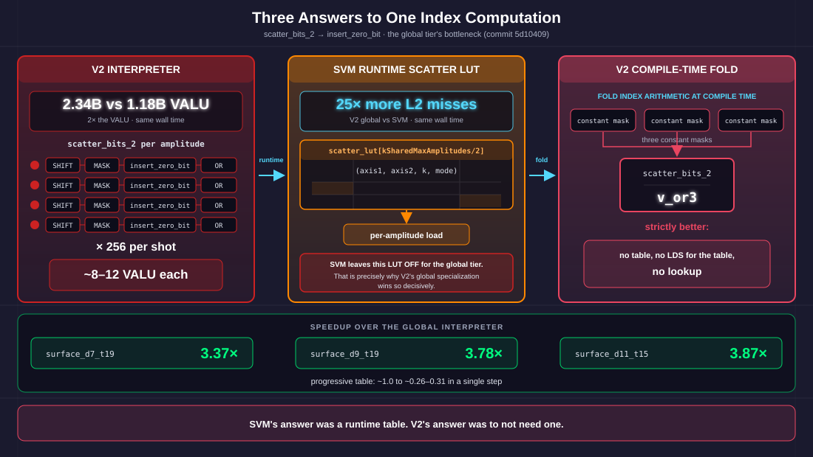
scatter_bits_2 with runtime axes builds its masks
with min/max and variable shifts on 64-bit values; with constant axes the
whole construction is three literal v_and masks and a v_or3, and the
partner amplitude becomes a constant displacement in the load encoding.This case exists to establish an upper bound on what specialization can do for a data-dependent op, and the case file says so:
v2_op_array_u2 indexes fused_u2[cp] then picks
matrices[in_state] where in_state comes from the LIVE Pauli frame,
so the row is NOT foldable — only the table entry cp and the axis
are.static inline __attribute__((always_inline)) void v2_op_array_u2(V2State* st, CV2Complex* v, u32 active_k, u32 axis,
const CV2FusedU2Entry* fused_u2, u32 cp) {
int in_state = (fget(st->pz, axis) ? 2 : 0) | (fget(st->px, axis) ? 1 : 0);
const CV2Complex* mat = fused_u2[cp].matrices[in_state]; // <- in_state is RUNTIME
if (axis < active_k) {
u64 axis_bit = 1ull << axis;
u64 iters = 1ull << (active_k - 1u);
for (u64 i = t; i < iters; i += V2_STRIDE) {
u64 i0 = scatter_bits_1(i, axis), i1 = i0 | axis_bit;
CV2Complex a = v[i0], b = v[i1];
v[i0] = cadd(cmul(a, mat[0]), cmul(b, mat[1]));
v[i1] = cadd(cmul(a, mat[2]), cmul(b, mat[3]));
}
}
/* … v2_barrier(); frame update from fused_u2[cp].out_states[in_state] … */
}in_state is read from the Pauli frame at execution
time. The frame depends on measurement outcomes, which depend on the PRNG, which depends on the
shot. No amount of static analysis recovers it. The matrix row stays a runtime load in both
forms.147→86 instructions (1.71×), VALU 54→42 (1.29×),
s_load 12→7, SGPR 23→16 — but branches 10→2.
cp — the table entryfused_u2.axisscatter_bits_1 and axis_bit become constant masks, as in S5.axis < active_kv2_op_array_u2(st, v, 8u, 4u, fused_u2, 17u) — with both
constant the guard is decided at compile time and the if is entered
unconditionally.:22 and :73 and are both s_cbranch_execz — the
loop's own exec-mask guards, which no amount of constant folding removes.static inline V2_NOISE_ATTR void v2_op_noise_block(V2State* st, const CV2NoiseSite* sites, const CV2Channel* channels,
const double* hazards, u32 num_sites, u32 start, u32 count) {
u32 t = v2_tid();
if (IS_OWNER) {
u32 end = start + count;
while (st->next_noise >= start && st->next_noise < end) {
u32 site_idx = st->next_noise;
apply_noise_site(st, sites, channels, site_idx);
st->next_noise = site_idx + 1u;
draw_next_noise(st, hazards, num_sites); // ocml_log_f64 hazard draw
}
}
v2_barrier();
}OP_NOISE_BLOCK covers the half-open site range [start,
start+count), but it consumes only those sites the PRNG selects.
draw_next_noise advances st->next_noise by a random amount.
The loop's trip count is a function of the random stream. It stays a loop in both
forms; specialization folds only start and count.(x - lo) > (hi - lo) idiomstart wasapply_noise_site and the ocml_log_f64 hazard
draw. There is nothing in them for a constant to touch.It is the first-principles prediction of the circuit_d5 regression
in §11.1. coop_circuit_d5.c contains 1,720 v2_op_* calls.
Counting them by opcode gives the mix directly:
| Opcode family | calls | share | S7 verdict |
|---|---|---|---|
frame_cnot/_cz/_h/_swap | 757 | 44.0% | folds well (S1) |
meas_dormant_static/_random | 215 | 12.5% | folds well (S2) |
noise/noise_block/readout_noise | 329 | 19.1% | does not fold (S7) |
apply_pauli | 135 | 7.8% | bounded (S8) |
detector/observable | 109 | 6.3% | — |
array ops (array_t, multi_cnot, cnot, s, multi_cz) | 136 | 7.9% | bounded (S5, S6) |
expand_t/swap_meas_interfere | 39 | 2.3% | folds (S3, S4) |
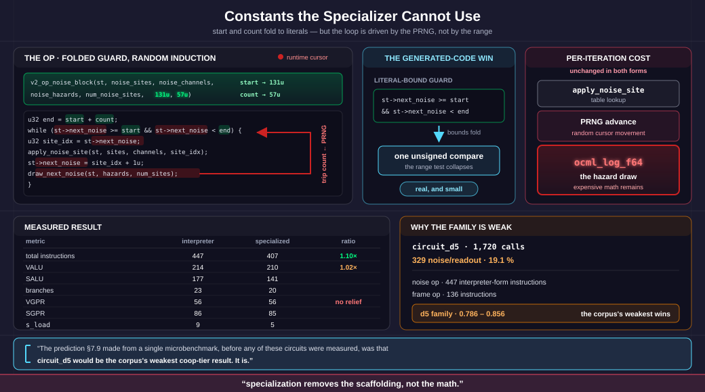
ocml_log_f64 hazard call. The trip count is a function of the random
stream, so the loop survives in both forms and VGPR pressure gets no relief.static inline __attribute__((always_inline)) void v2_op_apply_pauli(V2State* st, const CV2Mask* pauli_masks, u32 cp, u32 cond_slot) {
u32 t = v2_tid();
if (IS_OWNER && mget(st->meas, cond_slot) != 0) {
const CV2Mask* m = &pauli_masks[cp];
for (u32 w = 0; w < CLIFFT_V2_PAULI_WORDS; ++w) { st->px[w] ^= m->x[w]; st->pz[w] ^= m->z[w]; }
}
v2_barrier();
}0x58 is 88 bytes = sizeof(CV2Mask) for
CLIFFT_V2_PAULI_WORDS = 5 — two arrays of five uint64_t plus a sign
byte, padded to 8. The stride between the three constants is exactly one mask. That is the
s_load 17→11 drop. But the five words still have to be loaded and XORed
into the frame, and the number of loads is set by the mask width, not the operand.185→137 instructions (1.35×), VALU 71→63 (1.13×), VGPR
22→21, SGPR 44→42, s_load 17→11, branches 3→3. The more
interesting fact is in the kind:
| form | branches |
|---|---|
| interpreter | 1× s_cbranch_scc1 + 2× s_cbranch_vccnz |
| specialized | 3× s_cbranch_scc1 |
vccnz tests the vector condition codev_cmp. scc1 tests the
scalar condition code. Specialization did not delete the branch — it moved the
predicate that drives it off the vector pipe, exactly as S1 described for the
arithmetic.mget(st->meas, cond_slot) != 0 tests a runtime measurement outcome.
in_state: data that only exists once the shot is running.
Constant cond_slot fixes which bit is tested; nothing fixes its
value.The project's own documentation is misleading here, and the ground rule of this report is to trust data over text.
src/clifft/gpu/mlir/v2/ is historical.
v2_specializer.cc:127 emits a C translation unit whose first line is
#include "clifft/gpu/mlir/v2/v2_ops.h", and the path to .hsaco is
llvm dialect, it authored zero custom
passes, and one of the three stock passes it ran is a complete no-op.| Pipeline | Circuit | Chain |
|---|---|---|
v1 | frame_h, circuit_d3 | emitted.mlir → opt.mlir → translate.ll → optO2.ll → isa.s |
v2 | circuit_d3 | emitted.c → clangO0.ll → clangO2.ll → isa.s |
v1pass | frame_h | canonicalize → cse → convert-func-to-llvm |
Each is rendered both as a hunk-scoped .diff (greppable, for the report)
and a colorized side-by-side .html (for this deck). The renderer,
lowering/render_diffs.py, documents its own methodology:
diff -u: the stage files
are up to 20k lines and the interesting change is almost never at the top. --window
extracts the N largest contiguous change hunks so the report can quote a hunk that actually shows
the transform, rather than the first one alphabetically.
.mlir and .ll is noise. That is
intentional: the diff is evidence of how much the representation changed, and the
hunk excerpts show what kind of change.convert-func-to-llvm — and all 16 are context. Nothing
changed.cse pass (cleaning up after its own emitter) and V2's
-O0→-O2 boundary (where all the real work is).Same circuit: circuit_d3, 344 instructions, register tier.
| V1 stage | lines |
|---|---|
1_emitted.mlir | 23,002 |
2_opt.mlir | 14,257 |
3_translate.ll | 14,875 |
4_optO2.ll | 13,747 |
5_isa.s | 17,802 |
llvm-dialect MLIR for 344 instructions. Every
optimization stage is recovering from the emitter.| V2 stage | lines |
|---|---|
1_emitted.c | 383 |
2_clangO0.ll | 19,551 |
3_clangO2.ll | 8,132 |
4_isa.s | 10,398 |
-O0 gives every
local an alloca and every access an addrspacecast) → 8,132 at
-O2. The expansion is a compiler artifact, not something the emitter wrote
down — and -O2 removes it entirely.frame_h (4 instructions), for scale: 947 →
606 → 562 → 275 → 524. V2's emitted C for the same circuit is 43 lines.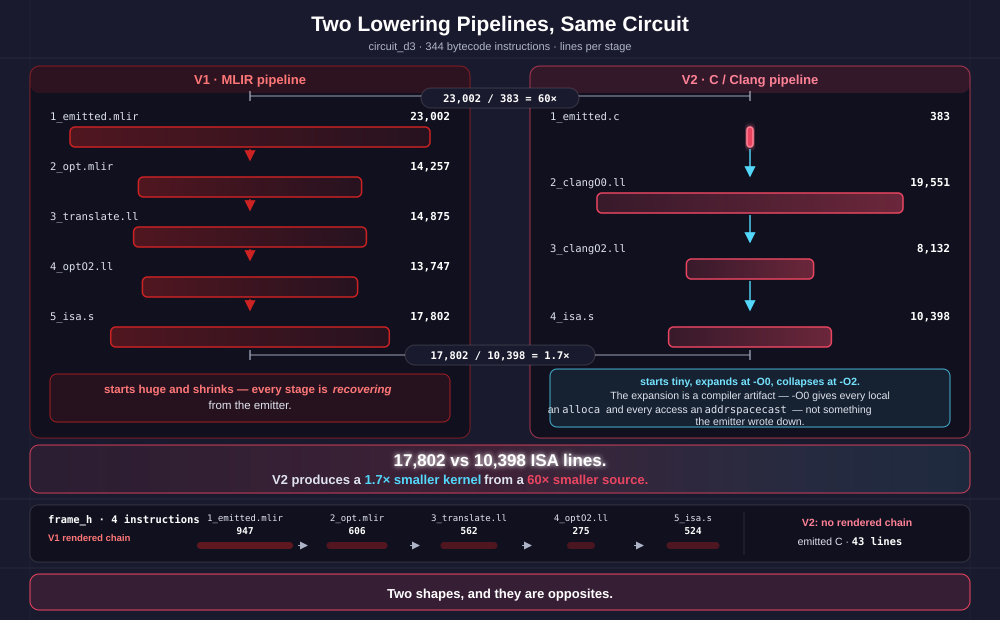
circuit_d3. V1's representation is largest where a human wrote it; V2's is
largest where the compiler expanded it at -O0 and smallest again after
-O2.canonicalize actually didmlir_codegen.cc:65-67 runs exactly three passes. Snapshots taken with
mlir-opt --mlir-print-ir-tree-dir, so each pass's output is a separate file:
0_canonicalize.mlir 736 lines
1_cse.mlir 608 lines
2_convert-func-to-llvm.mlir 608 lines // from an emitted 947| Op | emitted | after opt |
|---|---|---|
llvm.mlir.constant | 240 | 59 |
llvm.and | 54 | 9 |
llvm.shl | 73 | 34 |
llvm.xor | 68 | 29 |
llvm.ptr † | 192 | 160 |
llvm.ptr is a type, not an op, and occurs
several times on some lines (each getelementptr mentions it twice). Its row counts
occurrences where the op rows count one per line; by line it is 136 → 118. The other four
rows are unambiguous.cse — the largest diff in the corpus, and what it removedThe 0_canonicalize → 1_cse diff is 576 lines. The hunk it selects is
a PRNG update inside the shot loop that had been emitted twice:
llvm.lshr %33, %35 appears twice with
identical operands — once for px, once for pz. The emitter had no
notion of a common subexpression, so it wrote the word-index computation out separately for each frame
array. This is exactly the class of redundancy that does not exist in V2's C, because there it
is written once in fget and inlined by clang after constant-folding the index away
entirely (§7).convert-func-to-llvm did nothing at allThe full rendered diff. Not an excerpt — all 16 lines. The only change is the pass-name banner:
func dialect to convert because the emitter never
produced any — everything was already llvm.func. This is the clearest single
piece of evidence that V1 was not using MLIR as a multi-level IR: the pass whose entire job is to
lower a higher abstraction level found nothing to lower.translate → opt -O2, where the real work happenedMLIR's contribution ended at 608 lines. The transform that mattered happened in LLVM:
frame_h.3_translate.ll (562) → 4_optO2.ll (275), a 2×
collapse.
alloca/addrspacecast pairs — the
emitter's model of local state as stack slots — promoted to SSA registers by SROA/mem2reg, plus
nofree norecurse nounwind willreturn and noalias readnone captures(none) on
the pointers. LLVM did this, not MLIR. The MLIR stage had the same allocas in
front of it for two passes and left every one standing.circuit_d3: 14,875 → 13,747 — only 7.6%mlir_kernel_cache.cc:104-141), and the
very optimizations that rescued frame_h stop being affordable.optO2 → isa: 275 → 524 for frame_h, 13,747
→ 17,802 for circuit_d3. Normal — one IR instruction becomes several
machine instructions plus directives — but it means V1 shipped 17,802 lines of ISA for a
344-instruction circuit.frame_h got a 2× cleanup. circuit_d3 got 7.6%.emitted.c → clangO0, a 51× expansion383 → 19,551 lines, and the diff shows exactly why:
-O0, clang gives everything a stack slotalloca in
addrspace(5), an addrspacecast to generic, a store on entry, and a load
at each use. For a function with 20-odd parameters and 344 instructions' worth of inlined bodies,
that is thousands of ops.Op at 2_clangO0 | count |
|---|---|
load | 4,898 |
store | 2,488 |
alloca | 2,271 |
addrspacecast | 2,262 |
call | 1,770 |
-O0, and -O2 is about to delete essentially all of it.clangO0.ll → clangO2.ll: 19,551 → 8,132| Op | -O0 | -O2 |
|---|---|---|
alloca | 2,271 | 3 |
addrspacecast | 2,262 | 8 |
call | 1,770 | 72 |
load | 4,898 | 1,014 |
store | 2,488 | 1,103 |
fmul | 12 | 448 |
shufflevector | 0 | 459 |
call 1,770 → 72always_inline op bodies are inlined; the 72 survivors are the
noinline noise ops from V2_NOISE_ATTR plus ocml calls.fmul rises, and shufflevector appears<2 x float> operations. In the final ISA:
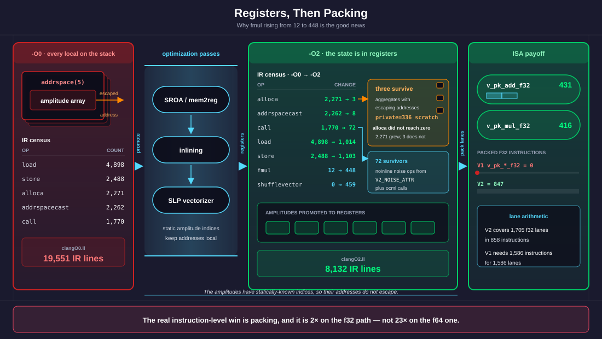
fmul rising 12→448 is the good
news. SROA and inlining move shot-local state off the stack, which is what makes the amplitudes
visible to the SLP vectorizer, which is what produces 847 packed instructions where V1 has
none. The three surviving allocas are drawn: the count did not reach zero, and
what remains is a per-kernel constant rather than something that scales with circuit
length.An earlier draft of that table read alloca 2,268 → 0, taken
from stage_stats.csv. Both numbers were wrong, in the same direction, for two
different reasons — and the raw .ll files disagree with the CSV.
-O2 zero was a truncation artifactstage_stats.sh emits only hist | head -30. At
-O2, alloca ranks 36th with 3 occurrences, so it falls off the
histogram. The CSV recorded "absent from the top 30" and the draft read it as "zero."
-O0 count was a regex miss%atomic-temp* / %.atomictmp* slots, which
the script's regex drops because clang names them with a leading . and a
- that the [0-9a-zA-Z_.] character class does not accept.' = alloca ' in the raw IR
instead of reading the summary. The corrected numbers do not weaken the point — 2,271 →
3 is a 99.87% elimination — but "3" is a more interesting fact than "0".allocas, and why they matter; the only allocas left in clifft_v2_spec after -O2
%st = alloca %struct.V2State, align 8, addrspace(5)
%vloc = alloca [16 x %struct.CV2Complex], align 8, addrspace(5)
%sloc = alloca [8 x %struct.CV2Complex], align 8, addrspace(5)%st is passed by pointer to every v2_op_* that SROA could
not fully inline away (the noinline noise ops); %vloc/%sloc
are the fixed-size complex staging arrays. SROA promotes scalars and small aggregates with
non-escaping addresses; these are neither.private=336 segment in the dispatch logalloca reached zero — it
did not — but that what remains is a fixed, per-kernel constant rather than something that
scales with circuit length. 2,271 grew with the instruction count; 3 does not.clangO2.ll → isa.s: where V2's own cost shows8,132 → 10,398 — instruction selection and register allocation. The top of the file is the one place V2 pays:
v2_op_noise_block is emitted noinlinecircuit_d3 ISA censusscratch_store_dwordx2 + 303 scratch_store_dwordx4.
One of the two reasons V2's register-tier ScratchSize is 928 bytes where V1's was
156 — the other being the shot-packed register layout of §9.1.circuit_d3 final ISA | V1 | V2 |
|---|---|---|
v_*_f64 | 4,347 | 187 |
v_*_f32 | 1,586 | 858 |
v_pk_*_f32 (packed) | 0 | 847 |
| total instructions | 16,675 | 9,421 |
v2_ops.h:206// f64 scalar multiply then narrow — byte-exact
// with SVM cscale. Do NOT relax.
static inline CV2Complex cscale(CV2Complex a, double s) {
CV2Complex r;
r.re = (float)((double)a.re * s);
r.im = (float)((double)a.im * s);
return r;
}
static inline double cnorm(CV2Complex v) {
double re = (double)v.re, im = (double)v.im;
return re * re + im * im;
}mlir_emit.cc:826, inside emit_cnorm// Match gold cnorm (hip_sampler.hip): extend each
// f32 component to f64, then square and sum in f64.
// Squaring in f32 first (then extending) loses
// precision and flips borderline stabilizer
// measurement branches on RNG-path-dependent shots.lowering/f64_attribution.sh compiles V1's own stage-3 IR twice through
V1's own pipeline (opt -O2 | llc -O2), changing exactly one thing:
v1/circuit_d3.5_isa.s byte-for-byte.clifft_log
and clifft_draw_next_noise marked noinline. Same amplitude arithmetic,
same PRNG, but the transcendental stays a call.v_*_f32 is identical across A and B. The amplitude
arithmetic never moved. What moved is 2,967 f64 instructions — 68% of V1's entire f64
volume — and 5,527 total instructions. All of it the log polynomial.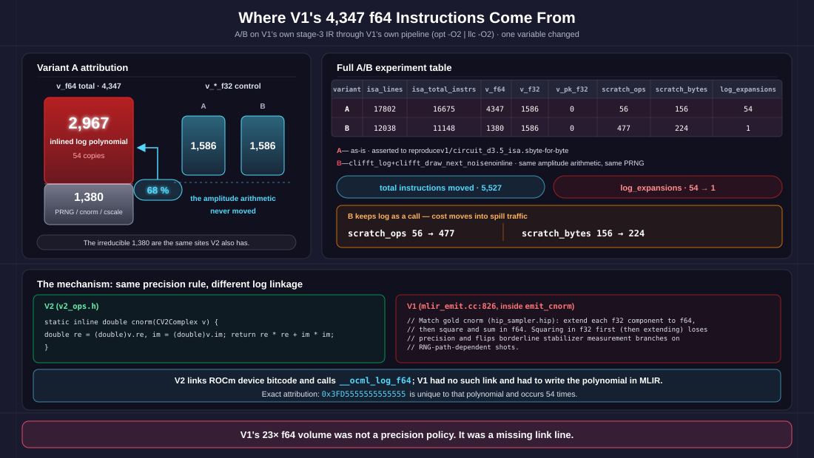
circuit_d3, decomposed by the
A/B experiment. 68% is 54 inlined copies of a hand-written log polynomial; the 1,380 that
remain are the same PRNG, cnorm and cscale sites V2 has. V2 keeps
log() as a call to __ocml_log_f64 because it links ROCm device bitcode; V1
had no such link and had to write the polynomial in MLIR.0x3FD5555555555555 is a coefficient unique to that polynomial, so it
counts expansions directly:
clifft_log inlined into the kernel.clifft_draw_next_noise call sites (each
containing a clifft_log call) plus one direct clifft_log site, against a
single shared @clifft_log definition. LLVM inlined all of them and cloned
five more while unrolling the surrounding loops.fdiv double into the
v_rcp_f64 / v_div_scale_f64 / v_div_fmas_f64 /
v_div_fixup_f64 sequence that pushes the ISA-level share to 68%.| what it is | ops | share |
|---|---|---|
PRNG: u64 → f64 × 2-53 | 465 | 45.5% |
cnorm — f64 |a|² accumulation | 390 | 38.1% |
cscale — f32 → f64 × 1/√2 → f32 | 168 | 16.4% |
| 1,023 |
| function | f64 | PRNG | ext/trunc |
|---|---|---|---|
clifft_v2_spec | 56 | 18 | 0 / 0 |
v2_op_noise | 10 | 2 | 0 / 0 |
v2_op_noise_block | 10 | 2 | 0 / 0 |
v2_op_swap_meas_interfere | 22 | 1 | 4 / 2 |
v2_op_readout_noise | 3 | 1 | 0 / 0 |
fpext/fptrunc pair in the module is inside one
noinline measurement helper. Identical semantics to V1, three orders of magnitude
apart in count, because V2's loops stayed runtime loops and V1's were unrolled.V1's pipeline is opt → llc → ld.lld
(mlir_kernel_cache.cc:124-150). There is no llvm-link step and no ROCm
device bitcode, so log() simply does not exist as a symbol. The emitter had to write
the polynomial itself, in MLIR, by hand. Its author saw the size problem coming and hoisted it:
// Emit the standalone @clifft_log(f64)->f64 function definition ONCE per
// module. Inlining the ~64-line log body at every noise draw produced
// hundreds of thousands of IR lines for large noisy circuits (e.g.
// surface_d9_t5: 1444 OP_NOISE × ~317 lines). Hoisting to a called function
// collapses that to one definition + short call sites.
void emit_log_function_def(std::ostringstream& out) { // mlir_emit.cc:1422@clifft_log definition, 48 short call sites, and that is what kept
surface_d9_t5 emittable at all. Then opt -O2 inlined all 54 copies
back. The emitter controlled its own output and had no way to control what the optimizer did
next.v2_ops.h:262extern double __ocml_log_f64(double);
static inline double ocml_log_f64(double x) {
return __ocml_log_f64(x);
}v2_compile_cache.cc:161 — step 2 of 5run(llvmlink + " -o " + linked + " " + bc + " " +
ctl + "/ocml.bc " + ctl + "/ockl.bc " + ...);v_pk_*_f32 is 0 in V1That is the shufflevector → v_pk_add_f32 chain of
§8.5, and it is available to V2 for the reason §8.5 gives: the amplitudes are in
registers, not in a stack array.
| V1 | V2 | |
|---|---|---|
| Where the representation is largest | at emission (23,002 lines, human-authored) | at -O0 (19,551, compiler-authored, thrown away) |
| What the "MLIR stage" contributed | constant dedup + CSE; one pass a no-op | n/a — no MLIR |
Where allocas die | LLVM -O2, and only on small circuits | clang -O2, 2,271 → 3 (99.87%); a fixed residue, not circuit-scaling |
| Does the optimizer stay enabled? | no — detuned by IR size above threshold | yes — IR never gets large enough to matter |
| Vectorization | none — 0 packed ops, with or without the log inlining | 459 shufflevector → 431 v_pk_add_f32, 416 v_pk_mul_f32 |
log() | hand-written in MLIR, re-inlined 54× by opt | __ocml_log_f64, one call, three relocations |
f64 instructions, circuit_d3 | 4,347 — 68% of it inlined log | 187 |
Final ISA, circuit_d3 | 17,802 lines | 10,398 lines |
Compile time, circuit_d3 | 3.58 s | 2.04 s |
Compile time, surface_d7_t19 | 221.48 s | V2 emits the same circuit in ~4,346 C lines — see §9 |
frame_h, the first V2 build, V2/SVM kernel time. No amount
of constant folding closes a 28× gap.This chapter walks the optimization history with the progressive ratio table as the
spine. Every row is a real archived benchmark run under V2_performance/runs/.
mlir-v2, from git log --reverse:| # | commit | time | what |
|---|---|---|---|
| 1 | d873997 | 07-25 04:46 | P1a — shrink reduction LDS |
| 2 | 7802423 | 07-25 04:50 | P1b — bit-pack lds_meas |
| 3 | 715f8d0 | 07-25 05:11 | P0 — shot-packed register tier |
| 4 | eea6e13 | 07-25 07:36 | specializer Phase 1 — operand library |
| 5 | b31b400 | 07-25 07:47 | specializer Phase 2+3 — register emitter |
| 6 | 60d5728 | 07-25 08:24 | specializer — coop tier + correctness gate |
| 7 | 4b55871 | 07-25 08:34 | force-inline v2_op_* in the interpreter |
| 8 | 9d9cc68 | 07-25 16:24 | noise/measurement noinline fencing |
| 9 | bbb5e42 | 07-25 16:35 | gate: multi-seed + disk cache |
| 10 | 5d10409 | 07-25 17:18 | specializer — global tier |
| 11 | 842d646 | 07-25 23:06 | XOR observable parity |
| 12 | 150d09f | 07-26 06:33 | v2_barrier → memory barrier |
V2/SVM kernel-time ratio, lower is better, < 1 means V2 wins. Seven of
the twelve archived runs, at the points where something changed. Column 4 is included because it
regressed.
| circuit | baseline | +P0+P1 | +specializer | fenced+gated | +noise-spec | +global-spec | final |
|---|---|---|---|---|---|---|---|
frame_h | 28.258 | 1.215 | 0.612 | 2.859 | 0.614 | 0.645 | 0.626 |
circuit_d3_p0.001 | 15.193 | 1.081 | 1.116 | 2.117 | 0.524 | 0.504 | 0.525 |
qv10 | 1.313 | 1.237 | 0.252 | 0.675 | 0.308 | 0.310 | 0.310 |
surface_d7_t15 | 1.650 | 1.469 | 1.787 | 1.427 | 0.503 | 0.507 | 0.505 |
surface_d9_t10 | 1.642 | 1.473 | 1.796 | 1.402 | 0.484 | 0.481 | 0.481 |
surface_d7_t19 | 0.968 | 0.872 | 1.014 | 1.017 | 1.015 | 0.312 | 0.298 |
surface_d9_t19 | 0.906 | 0.817 | 0.973 | 0.971 | 0.972 | 0.262 | 0.262 |
surface_d11_t15 | 0.938 | 0.854 | 1.005 | 1.005 | 1.005 | 0.259 | 0.256 |
Every archived run kept its rocprofv3 kernel trace, and the kernel
name says which code path produced each cell. clifft_v2_register /
_coop / _global are the three interpreter kernels;
clifft_v2_spec is a specialized one.
| circuit | +specializer | fenced+gated | +noise-spec | +global-spec | final |
|---|---|---|---|---|---|
frame_h | spec | register+spec | spec | spec | spec |
circuit_d3 | spec | register+spec | spec | spec | spec |
qv10 | spec | coop+spec | spec | spec | spec |
surface_d7_t15 | coop | coop+spec | spec | spec | spec |
surface_d9_t10 | coop | coop+spec | spec | spec | spec |
surface_d7_t19 | global | global | global | spec | spec |
surface_d9_t19 | global | global | global | spec | spec |
surface_d11_t15 | global | global | global | spec | spec |
spec.
Nothing in this table is a tuning effect — every movement is a change of which kernel
ran.At 9d9cc68 the correctness gate existed but its verdict was cached
only in-process. rocprofv3 spawns a fresh process per invocation, so the gate's
own validation dispatches re-ran inside the profiled region and the digester summed them into
the kernel time.
frame_h 0.612 → 2.859, circuit_d3 1.116
→ 2.117, qv10 0.252 → 0.675. Nothing had actually slowed down.bbb5e42 persisted the verdict to <hsaco>.gate so it
is computed once ever:
noise-fenced-gated is the only run in which any circuit dispatched two
different kernels. That is the gate's validation dispatch, caught in the act.smci350-rck-g03-d13-21; columns 9–12,
including final, on smci350-rck-g03-f13-21 (recovered via sacct;
only the final run recorded node identity in node.json, whose own note warns
"mi350x-es is heterogeneous — do not compare ratios across nodes").
frame_h's 0.085 in the omitted column is not a real 10× stepspecializer-verify run's SVM side measured 128.2 µs
against 16–20 µs everywhere else — a baseline outlier on a 12 µs kernel, not a V2
improvement. It is left out for that reason, and named here so the omission is not
silent.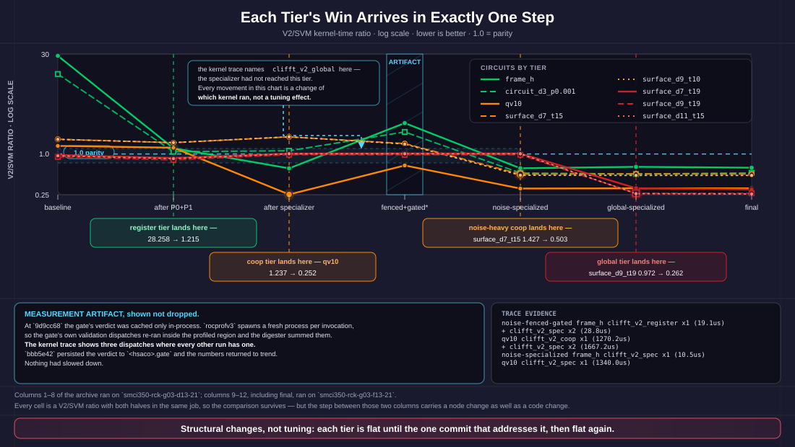
frame_h's 28.258 baseline.s_barrier between every op.
frame_h — rank 0, four
instructions, no amplitudes worth speaking of — it means 256 threads doing the work
of one, with a barrier after each of four instructions, while SVM's register path runs one
shot per thread. Hence 28.258×.715f8d0)execute_shot body was
parameterized on how threads cooperate, through five macros.#ifdef V2_REGISTER
# define V2_STRIDE 1u
static inline u32 v2_tid(void) { return 0u; }
# define IS_OWNER 1
/* v2_barrier() -> nothing; V2_REDUCE2 -> identity (a stride-1 loop already summed) */
#else
# define V2_STRIDE 256u
static inline u32 v2_tid(void) { return __builtin_amdgcn_workitem_id_x(); }
# define IS_OWNER (t == 0)
/* v2_barrier() -> fenced s_barrier; V2_REDUCE2 -> coop_reduce2 butterfly */
#endif-DV2_REGISTER, for (u64 i = t; i < iters; i += V2_STRIDE) becomes
for (i = 0; i < iters; i += 1) — a plain serial loop in one thread — the
barriers vanish, IS_OWNER is constant-true so the tid0 guards evaporate, the reduction is
the identity, and GpuComplex v[16] lives in VGPRs.spec_body that all three tiers
can share, and the specializer would have needed three separate emitters.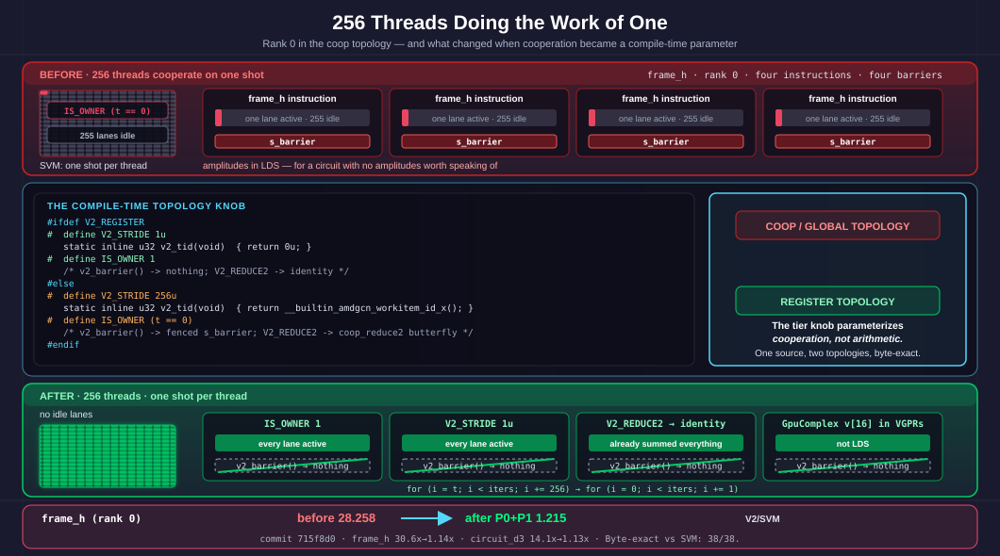
The coop tier's occupancy is set by LDS. Two commits took the declared workgroup footprint down by 47%. Both changes are of the form "the buffer was declared for a worst case that cannot happen":
| Buffer | Before | After | Why it is safe |
|---|---|---|---|
lds_red0, lds_red1 | [256] | [8] | coop_reduce2 only touches warps 0–3 |
lds_red_scratch | [1024] | [512] | The coop SWAP_MEAS fold half is ≤ 210-1 = 512 |
lds_meas | u8 [4096] = 4 KB | u64 [64] = 512 B | Records are booleans; every access is tid0-only |
d873997) — 25,088 → 16,896 Brocprofv3's LDS_Block_Size
(tools/ldscheck_50017.log).7802423) — 16,896 → 13,312 Bmget/mset/mxor1)
replacing all 15 access sites (ldscheck_50021.log)..hsaco on disk records
.group_segment_fixed_size: 13064, while rocprofv3 reports 13,312. An
earlier draft read the difference as 248 bytes "reclaimed by later changes." It is not: 13,312 is
13,064 rounded up to the next 256-byte granule, and the global tier shows the identical pattern
(ELF 784 → profiler 1,024). The two numbers describe one allocation.Both commit messages derive occupancy from floor(64 KB / LDS), and the P1
planning documents state "CDNA4, 64 KB LDS/CU" as a premise.
Asking the compiler directly — the same clang that builds these kernels —
by binary-searching the largest accepted address_space(3) array:
; Occupancy: comment, 256-thread workgroup| LDS bytes | gfx942 | gfx950 |
|---|---|---|
| 25,088 (baseline) | 2 | 8 (6) |
| 16,896 (after P1a) | 3 | 8 |
| 13,312 (after P1b) | 4 | 8 |
| 8,704 (global tier) | 7 | 8 |
min(8, 163840 / LDS)163840/20992 = 7.
surface_d9_t19 from 0.906 to 0.817 and
surface_d11_t15 from 0.938 to 0.854 — about 10%, real and
reproducible.after-P0-P1 run measures all three changes at once, on top of P0's topology change,
which is itself worth 28×.eea6e13 — extract the operand library. A behavior-preserving
refactor: the interpreter becomes a thin for(pc) switch dispatching to
static inline v2_op_*(st, v, scratch, active_k, operands...) in a new shared header. Each
op takes its operands and the pre-op active_k by value. That signature is the
whole design:
-O2 folds loop bounds
(1<<(active_k-2) → literal) and matrix indices, WITHOUT unrolling the
2^k sweeps (avoids V1's IR-bloat disease).4b55871 marked the bodies always_inlineexecute_shot exactly as the
pre-refactor switch bodies were. That commit also honestly records a cost that had not yet been
explained:
circuit_d5 family's 1.44–1.46×
— see §11.1, where it turns out not to be a performance problem at all but the
visible consequence of a correctness gate doing its job.b31b400) — the register-tier emitterThe first per-circuit kernel. Measured against the interpreter on the same tier:
| circuit | interpreter (V2/SVM) | specialized (V2/SVM) | gain over interpreter |
|---|---|---|---|
frame_h | 0.16× | 0.08× | 2.0× |
circuit_d3 | 1.07× | 0.32× | 3.3× |
color_d3 | 1.09× | 0.36× | 3.0× |
60d5728) — and a commit-message claim that does not reproduceThe same spec_body, a 1-workgroup-per-shot wrapper, LDS state. This is the
commit where qv10 drops to 0.252. The message claims "qv10 5.5x, surface_d7_t15
7.6x" over the coop interpreter.
Each circuit's last interpreter run against its first specialized run — same node, same shot count, kernel identity confirmed by trace:
| circuit | interpreter (µs) | specialized (µs) | gain |
|---|---|---|---|
surface_d7_t15 | 39,352.8 (coop) | 11,117.4 (spec) | 3.54× |
surface_d9_t10 | 79,242.3 (coop) | 21,318.3 | 3.72× |
surface_d7_t19 | 20,295.2 (global) | 6,229.2 | 3.26× |
surface_d9_t19 | 43,588.2 (global) | 11,726.6 | 3.72× |
surface_d11_t15 | 75,154.0 (global) | 19,412.2 | 3.87× |
qv10 is the exception, and it is instructive5,358.7 µs interpreter → 1,085.9 µs specialized is 4.93× — but its specialized time then rises to 1,340–1,361 µs in every later run and settles at 0.310 rather than 0.252. The counters name the cause without ambiguity:
| run | V2 µs | V2/SVM | VGPR | VALU |
|---|---|---|---|---|
| after-specializer | 1085.9 | 0.252 | 24 | 5.10e+08 |
| specializer-final | 1088.6 | 0.251 | 24 | 5.31e+08 |
| noise-specialized | 1340.0 | 0.308 | 36 | 5.02e+08 |
| global-specialized | 1346.4 | 0.310 | 36 | 5.02e+08 |
| final | 1361.3 | 0.310 | 36 | 5.02e+08 |
noinline boundaries in
9d9cc68: the ops can no longer be interleaved across call edges, so the
scheduler has less to overlap and the ABI forces values live across the calls.d13-21; the SVM baseline is 4,317–4,388 µs
throughout.qv10 pays about 23% for byte-exactness —
and the progressive table reports the post-fence number rather than quoting the faster incorrect
one.60d5728 also introduced the gate, and it did so because coop
specialization of noise-heavy circuits diverged.
.hsaco is validated against the interpreter on a multi-seed
shot sample before it is allowed to run, with the verdict cached to disk (bbb5e42
added the multi-seed + disk cache). A circuit that fails the gate silently falls back to the
interpreter.5d10409) — this one began with a bottleneck analysisscatter_bits_2 →
insert_zero_bit, ~8–12 VALU each) that the runtime interpreter pays 256-way per
shot and SVM avoids via a scatter LUT it leaves OFF for global.surface_d7_t19 / d9_t19 / d11_t15, and in
the progressive table those three go from ~1.0 to ~0.26–0.31 in a single step.scatter_bits_2 per amplitude, 8–12 VALU each, 256 threads deep. Centre: SVM's
runtime scatter LUT, which it disables on the global tier. Right: V2's compile-time fold
— three constant masks and a v_or3.9d9cc68) — what shippedAfter the coop emitter, noise-heavy circuits still failed the gate. The fix had two parts:
V2_NOISE_ATTRnoinline in the specialized build, so each straight-lined op is an
optimization barrier the -O2 scheduler cannot move FP across.
-fno-vectorize -fno-unroll had been
added, which themselves differed from the build-time interpreter. Dropping them made the two
paths compile the same way.surface_d7_t15; and surface_d9_t10 1.800 →
0.484. A 3.5× and 3.7× step — because those circuits could now
pass the gate and run specialized.specializer-final column, not
from the italic 1.427/1.402. Those intermediate cells are the gate-polluted ones: they are
already partly specialized, being the sum of an interpreter dispatch and two specialized
dispatches, so they sit between the two real values and understate the step. The VALU counter makes
the three states plain — 4.71e+09 interpreter, 3.49e+09 polluted mixture, 1.15e+09
specialized.The commit attributed the divergence to -O2 reassociating FP across
inlined call boundaries. Four commits later (150d09f) that theory was refuted:
-O2
-ffp-contract=off with no fast-math, under which inlining cannot legally change an FP
result, and V2_GATE_SELFTEST caught the kernel disagreeing with itself across
two runs of the same binary.V2_NOISE_ATTR was retainedV2_SPEC_NOISE_INLINE=1
exists precisely so the hypothesis can be A/B tested rather than assumed.842d646)V2 counted the raw observable parity; every reference implementation —
GPU-SVM in hip_sampler.hip and the CPU sampler in svm.cc — XORs it
against the noiseless reference syndrome first.
surface_d11_t19 gave 674 where SVM gave
1326 of 2000 passed shots.The fix threads the reference through as a packed u32
expected_obs_mask. The implementation detail is the interesting part:
num_noise_sites so the kernarg struct SIZE is unchanged (a 120-vs-116 mismatch
silently breaks every dispatch).With HSA dispatch there is no runtime checking the kernarg layout for you (§13): the AQL packet carries a pointer and the kernel casts it. A size or offset mismatch is not an error, it is silently reading the wrong bytes.
static_assert(static_cast<int>(clifft::Opcode::OP_FRAME_CNOT) == 0, "opcode FRAME_CNOT");
static_assert(static_cast<int>(clifft::Opcode::OP_EXPAND) == 19, "opcode EXPAND");
static_assert(sizeof(CV2Instr) == sizeof(GpuInstr), "CV2Instr size");
static_assert(offsetof(CV2Instr, opcode) == offsetof(GpuInstr, opcode), "instr.opcode");static_asserts in device_abi_checks.cc, pinning
every offset and size in the device header to the host structs in gpu_types.h, plus the
opcode numbering.| Change | Mechanism | Who it helped | Magnitude |
|---|---|---|---|
| P0 shot-packed register tier | topology: 1 shot/thread instead of 256 threads/shot | rank ≤ 4 | 28.3× → 1.2× |
| P1a/P1b LDS reclamation | 25,088 → 13,312 B/workgroup | all coop | ~10%, mechanism unconfirmed on gfx950 |
| Specializer, register | constant-fold operands, delete dispatch | rank ≤ 4 | 3.3× over interpreter |
| Specializer, coop | same, plus rank-folded loop bounds | rank 5–10 | 3.5–3.7× |
| Noise fence + gate | made noise circuits eligible to specialize | noise-heavy coop | 1.79 → 0.50 |
| Specializer, global | fold scatter_bits_2, no LUT needed | rank 11–19 | 3.3–3.9× |
| Rank cap 19 → 26 | size HBM from circuit rank, not the cap | rank 20–26 | new capability (§10) |
The blocker was an addressing convention, not a memory limit. Every global-tier
kernel strided its per-workgroup HBM slice by kGlobalMaxAmplitudes — the
cap — rather than by the circuit's actual amplitude count:
// before: every slot is 2^kGlobalMaxPeakRank amplitudes wide, regardless of circuit
CV2Complex* v = global_v + (u64)slot * kGlobalMaxAmplitudes;frame_h.global_v slice alone, which is what the stride
above governs; §10.2's quoted code comment counts the half-size scratch too, so the same two
points read 6 MB and 768 MB there.b266f80) — four places that must agreeDerive every per-slot stride from flat.peak_rank:
| File | What it addresses |
|---|---|
hip_sampler.hip | sample_kernel_global_coop device addressing and the matching host v_count/scratch_count allocation |
emit_global_kernel.cc | the Hybrid compiled-codegen kernel |
mlir_emit.cc | the MLIR V1 global kernel |
v2_kernel.cc | already rank-derived on the device side; only the resident-pool sizing needed the same treatment |
emit_global_kernel.cc change fixed a latent out-of-bounds bug unrelated to the capscratch_v used the FULL v
stride while the host allocated scratch at HALF the amplitude count.2^(k-1) amplitudes — it holds the fold
half — so the host allocated half. The device strided as if it were full. Any global-tier
circuit using more than one workgroup was addressing past its scratch slice. It had never been
caught because the overrun landed in the next workgroup's scratch, which is written before
it is read on the next op.// Resident pool sized to a fixed HBM budget: each workgroup owns one
// amplitude slice (1<<peak_rank) + a half-size scratch, i.e. 12 bytes
// per amplitude. At rank 19 that is 6 MB/wg; at rank 26 it is 768 MB/wg.
// The 32 GB budget keeps the pool sane at both ends on a 288 GB MI355X.
const uint64_t amp = 1ull << flat.peak_rank;
const uint64_t bytes_per_wg = amp * sizeof(GpuComplex) + (amp / 2) * sizeof(GpuComplex);
const uint64_t budget = 32ull << 30; // 32 GB
uint64_t wgs = budget / bytes_per_wg;
if (wgs < 1) wgs = 1; // rank 26+: at least one resident wg
if (wgs > 2048) wgs = 2048;
global_grid_wgs = static_cast<uint32_t>(wgs);
// Prefer a multiple of the XCD count when the budget allows it, so the
// resident pool spreads evenly; never inflate past the budget.
if (global_grid_wgs > kNumXCDs) global_grid_wgs -= global_grid_wgs % kNumXCDs;kNumXCDs = 8 keeps the pool spread evenly across the device's eight
compute dies. One further constraint: the cap is kept ≤ 30 so 1u <<
rank stays inside a u32.The specializer's correctness gate dispatched a fixed 64-workgroup pool and a fixed
5,000 shots regardless of rank (6960527). At rank ≤ 19 that is harmless. At rank
20+ it means the gate validates on a pool tens of times narrower than the real dispatch, while
per-shot cost grows as 2^peak_rank:
qv20 had not finished after 10
minutes — longer than the benchmark it gates.V2_GATE_SHOTS overrides it for paranoid validation.This is the part worth reading. With the cap raised, nothing in the tree could exercise it — and the reason is a compiler pass working correctly.
StatevectorSqueezePass defeats most "high rank" circuits4b9efc7:
rank19_q100_d10_wide compiles to peak_rank = 1, and the
surface_d11 family tops out around 14."peak_rank == num_qubits
exactly.run_v2 (trace → HIR passes → reference syndrome → lower →
bytecode passes)L8 → L4) to
keep compile and run time bounded."Are these all the circuits?" was a fair challenge, and it was answered by measurement
(89d541e). probe_all.sh ran the rank probe over every live
.stim in the tree — 353 files across tests/fixtures,
tools/bench/fixtures and docs/guide/circuits — recording the
compiled peak_rank, i.e. what the tier dispatcher actually sees after
StatevectorSqueezePass.
| compiled rank | fixtures | tier |
|---|---|---|
| 0 | 82 | register |
| 1 | 244 | register |
| 3 | 3 | register |
| 4 | 2 | register |
| 0–1 subtotal | 326 | register |
| 7 | 3 | coop |
| 10 | 8 | coop |
| 11 | 2 | global |
| 12 | 1 | global |
| 13 | 1 | global |
| 14 | 1 | global |
| 20 | 2 | global |
| 21 | 1 | global |
| 22 | 1 | global |
| 23 | 1 | global |
| 24 | 1 | global |
| ≥ 5 subtotal | 22 | coop + global |
| total | 353 |
surface_*_t10 at rank 7, and eight at
rank 10 — five being the circuit_d5 parameter sweep, the other three
qv10, cultivation_d5 and surface_d7_t15.sweep (188) and rank_sweep (56) squeezes flatrank_q17_r12_d1.stim promising rank
12.BENCHMARKS.mdclifft collapses to rank 0–1 and never leaves the register tier.The five QV circuits are the only ones in the corpus above rank 19, and they are where V2's advantage thins out:
| circuit | rank | V2 (µs) | SVM (µs) | ratio | VGPR spill | SGPR spill | scratch |
|---|---|---|---|---|---|---|---|
qv20_seed42 | 20 | 1,804,648 | 2,123,250 | 0.850 | 0 | 0 | 96 |
qv20_L8_seed42 | 20 | 1,583,246 | 2,162,954 | 0.732 | 0 | 0 | 112 |
qv21_L8_seed42 | 21 | 2,977,386 | 4,045,316 | 0.736 | 0 | 0 | 112 |
qv22_L6_seed42 | 22 | 3,179,445 | 3,243,842 | 0.980 | 136 | 762 | 448 |
qv23_L5_seed42 | 23 | 6,086,167 | 6,146,952 | 0.990 | 199 | 662 | 576 |
qv24_L4_seed42 | 24 | 7,241,815 | 8,211,443 | 0.882 | 152 | 594 | 480 |
The resource columns are solid. Both binaries survive in-tree — pre-fence
under history/stale_spec_cache_20260725/, post-fence under
scratch/fence_cache/all/ — so this is directly checkable:
| kernel | pre (B) | post (B) | Δ | bytes differing | vgpr_spill | sgpr_spill | sgpr_count | scratch |
|---|---|---|---|---|---|---|---|---|
global_r22_n359 | 217,424 | 218,576 | +1,152 | 83.8% | 136 = 136 | 762 = 762 | 108 = 108 | 448 = 448 |
global_r23_n335 | 190,480 | 191,568 | +1,088 | 82.9% | 199 = 199 | 662 = 662 | 108 = 108 | 576 = 576 |
global_r24_n320 | 172,880 | 173,904 | +1,024 | 82.8% | 152 = 152 | 594 = 594 | 108 = 108 | 480 = 480 |
20260727T125310Z_report-final-allfixtures, SLURM job 50793, node
smci350-rck-g03-d13-21, commit 79d4463, clean tree — the same run
§14 and §15 draw on. git merge-base --is-ancestor 150d09f 79d4463 confirms
the fence fix is an ancestor of it.report-final-postdust (job 50469, commit f565075) landed
on a different node, f13-21. Its ratios agree to within 1.3% on every
circuit (0.839/0.723/0.728/0.981/0.990/0.880 against the published
0.850/0.732/0.736/0.980/0.990/0.882), identical scratch sizes.
mi350x-es is heterogeneous and ratios are not comparable across node types, so the
two runs are never mixed within a row.The tempting explanation: the specializer emits one call per instruction with constants baked in, so longer circuits carry more live scalars until the SGPR budget breaks.
All fifteen global_* kernels in lowering/kernel_resources.csv,
nothing omitted, sorted by emitted instruction count:
| rank | instrs | VGPR | AGPR | SGPR | VGPR spill | SGPR spill | scratch |
|---|---|---|---|---|---|---|---|
| 14 | 16,521 | 128 | 64 | 106 | 0 | 4 | 352 |
| 11 | 16,415 | 128 | 64 | 106 | 0 | 4 | 320 |
| 11 | 16,415 | 128 | 64 | 106 | 0 | 4 | 320 |
| 13 | 9,359 | 128 | 64 | 106 | 0 | 4 | 336 |
| 13 | 9,359 | 128 | 64 | 106 | 0 | 4 | 336 |
| 11 | 8,952 | 128 | 64 | 106 | 0 | 4 | 320 |
| 11 | 8,952 | 128 | 64 | 106 | 0 | 4 | 320 |
| 12 | 4,296 | 128 | 64 | 106 | 0 | 4 | 320 |
| 12 | 4,296 | 128 | 64 | 106 | 0 | 0 | 320 |
| 20 | 418 | 104 | 40 | 106 | 0 | 0 | 96 |
| 20 | 387 | 106 | 42 | 106 | 0 | 0 | 112 |
| 21 | 393 | 104 | 40 | 106 | 0 | 0 | 112 |
| 22 | 359 | 128 | 64 | 108 | 136 | 762 | 448 |
| 23 | 335 | 128 | 64 | 108 | 199 | 662 | 576 |
| 24 | 320 | 128 | 64 | 108 | 152 | 594 | 480 |
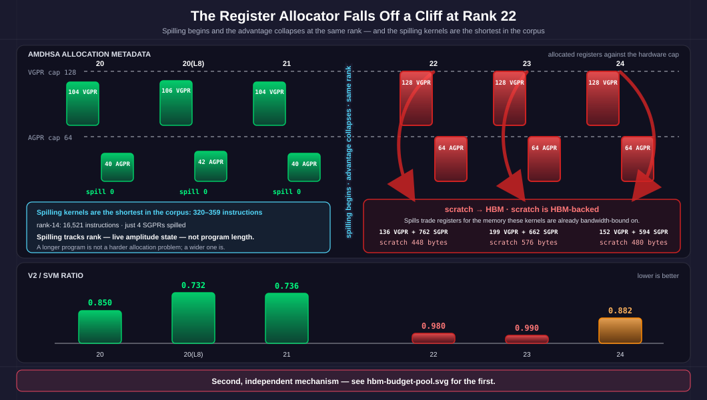
What actually changes at the boundary is narrower than expected. Diffing the emitted C
for rank 21 against rank 22 with all numeric literals normalized shows no structural
difference — same preprocessor preamble, same spec_body shape, near-identical
opcode mix (169/80/42 array_u2/array_u4/array_rot vs
142/66/44). The tier wrapper is rank-independent by construction. The one thing that differs is a
single baked constant:
Crossing 2²² also moves the allocator's chosen register split: the non-spilling rank 20/21 kernels sit at VGPR 104–106 / AGPR 40–42, while every spilling kernel jumps to the VGPR 128 / AGPR 64 cap.
SQ_INSTS_MFMA = 0 throughout here.) So the pattern is consistent
with the allocator exhausting AGPR overflow at the cap and falling through to scratch.circuit_d5 / cultivation_d5 family — rank 10,
1,720 instructions, the noisiest circuits in the corpus — produced measurement
outcomes from the specialized kernel that differed from the interpreter on roughly one shot in
five thousand, on some seeds.ocml_log_f64 hazard draw, cumulative-probability sums, RNG.
-O2 reassociated that FP differently across copies, a probability could shift by
~1 ULP, sample_branch could take the other side of a comparison, and —
because a branch decides whether a PRNG draw is consumed — the two streams would
decorrelate permanently and never resynchronize.V2_NOISE_ATTR (9d9cc68): emit the noise ops noinline in the
specialized build so -O2 cannot merge or reassociate across the copies.The specializer compiles with -O2 -ffp-contract=off and no
fast-math. Under those flags reassociation of floating-point is not permitted, so inlining
cannot change an FP result. v2_compile_cache.cc says so at the flag site:
// Flags are IDENTICAL to the build-time interpreter pipeline
// (ClifftAmdgcn.cmake) so the shared v2_op_*() bodies compile to the same
// code -> byte-exact. -ffp-contract=off with no fast-math is what makes that
// hold regardless of inlining decisions: without reassociation or
// contraction the optimizer cannot change an FP result. Do NOT add
// vectorize/unroll/fast-math flags that would diverge from the interpreter.V2_GATE_SELFTEST (ca82260) runs a kernel against
itself, twice, same seed, same shots, same binary. Rounding is deterministic for a
fixed binary, so any disagreement is proof of nondeterminism.
| seed | interp vs interp | verdict | spec vs spec | verdict |
|---|---|---|---|---|
| 1 | 1620 / 1620 | deterministic | 1620 / 1619 | NONDETERMINISTIC |
| 7 | 1724 / 1724 | deterministic | 1724 / 1723 | NONDETERMINISTIC |
| 42 | 1704 / 1704 | deterministic | 1704 / 1704 | deterministic |
| 99 | 1720 / 1720 | deterministic | 1721 / 1720 | NONDETERMINISTIC |
| 123 | 1691 / 1691 | deterministic | 1690 / 1691 | NONDETERMINISTIC |
| 2718 | 1681 / 1681 | deterministic | 1681 / 1681 | deterministic |
| 0 / 6 diverge | 4 / 6 diverge |
circuit_d5_p0.001, job 50361. Counts are
obs0 ones from run A vs run B of the same binary. passed was 5000/5000 in
every cell — the shots all completed; only the observable flipped.V2_GATE_BISECT localized it, and the A/B was the last nailv2_kernel.cc:226-247) re-runs each shot as its
own dispatch — run_one(..., i, i+1, ...) — and in the coop tier one
shot is exactly one workgroup.
DIVERGES
line. The bug needed concurrent workgroups — which also rules out any single
shot's arithmetic: the same instruction stream, on the same inputs, is correct when run
alone.V2_SPEC_NOISE_INLINE=1, which flips V2_NOISE_ATTR back to
always_inline, gave 5/6 seeds diverging rather than 4/6, with larger
deltas (seed 99 went from off-by-1 to off-by-3, 1721 / 1718).
v2_ops_body.inc:409-427 is labelled HISTORICAL NOTE and
states the refutation inline, so the next reader cannot re-derive the dead theory from the
code.v2_barrier() was a bare
__builtin_amdgcn_s_barrier().On AMDGCN that is an execution barrier only. LLVM declares the intrinsic
IntrNoMem, so the backend emits no s_waitcnt lgkmcnt(0) ahead of it
and the scheduler is free to sink or hoist LDS accesses across it. A wave can retire the barrier
with a ds_write still in flight while a peer wave reads the stale word.
| kernel | barriers | unfenced | how measured |
|---|---|---|---|
interpreter (clifft_v2_coop) | 80 | 50 (62.5%) | A/B rebuild, s_barrier vs release/acquire, -O2 asm |
specialized (coop_r10_n1720) | 1,509 | 1,400 (92.8%) | llvm-objdump -d on the archived pre-fix .hsaco |
__syncthreads() already expands to the fenced sequence. V2 hand-rolled the barrier to
avoid HIP and lost the fence along with it — a direct, and expensive, cost of the no-HIP
policy (§13).Commit 150d09f's message, and the header comment in
scratch/d5_fence.sh, both record the specialized figure as 1439 / 1509 (95.4%).
That number does not reproduce.
coop_r10_n1720_977e1e830813621d.hsaco: scanning back 24, 32, 48, 64 or
unbounded instructions to the previous barrier all give 1,400, and loosening
lgkmcnt(0) to any lgkmcnt does not move it either.
.hsaco linked against
ocml/ockl, which contributes one extra barrier and one extra unfenced
site from device-library code that is not V2's.150d09f) — release/acquire around the barrier// s_barrier alone is an EXECUTION barrier only: LLVM models the intrinsic as
// IntrNoMem, so it neither emits `s_waitcnt lgkmcnt(0)` nor stops the scheduler
// from sinking/hoisting LDS accesses across it. A wave can therefore retire the
// barrier with a ds_write still in flight while a peer wave reads the stale
// word. The release/acquire fence pair is what makes it a MEMORY barrier: the
// release forces the waitcnt before s_barrier, the acquire keeps later loads
// from being hoisted above it. HIP's __syncthreads() expands to exactly this,
// which is why the SVM backend never saw the race.
static inline void v2_barrier(void) {
__builtin_amdgcn_fence(__ATOMIC_RELEASE, "workgroup");
__builtin_amdgcn_s_barrier();
__builtin_amdgcn_fence(__ATOMIC_ACQUIRE, "workgroup");
}coop_reduce2's three raw barriers were converted too — each
guards a read-after-write on lds_red0/lds_red1, so a lost partial sum
perturbs the reduction total and flips sample_branch. That is the causal path by which
a missing fence became a wrong measurement outcome, and it is why the symptom looked numerical:
the corrupted value really was a probability.coop_interpreter.c compiled twice — once with the bare
s_barrier, once with the fence pair — same source, same flags
(-O2 -ffp-contract=off -mcpu=gfx950), both disassembled:
| build | instructions | barriers | fenced | ds_* in flight, unfenced |
|---|---|---|---|---|
| pre-fix interpreter | 5,629 | 80 | 1 (1.2%) | 50 (62.5%) |
| post-fix interpreter | 5,848 | 80 | 74 (92.5%) | 0 (0.0%) |
| pre/post register tier | 4,457 | 0 | — | — |
ds-in-flight count goes to exactly zero
— the 6 barriers that remain unfenced have no LDS write pending, so the wait is
correctly elided rather than missing.-DV2_REGISTER the two .s files are identical by
md5, because v2_barrier() compiles to nothing there
(v2_ops.h:131). §9's register-tier numbers need no restatement.v2_barrier()'s three-line body — and every cell reproduces
exactly. The "fenced" column uses a 3-instruction lookback; at a 1-instruction lookback the post-fix
figure is 73 rather than 74, the one place the definition matters, and it moves nothing..hsaco | barriers | fenced (lgkmcnt(0) within 3) | ds_* in flight, unfenced |
|---|---|---|---|
pre-fix coop_r10_n1720 | 1,509 | 49 (3.2%) | 1,400 (92.8%) |
post-fix coop_r10_n1720 | 1,509 | 1,404 (93.0%) | 0 (0.0%) |
With the fence in place the gate passes on coop_r10_n1720, and the
specializer is selected for all six circuits. Kernel time, median of 5, 10,000 shots, both arms
back-to-back on one node (job 50389, gfx950):
| circuit | interpreter | specialized | speedup |
|---|---|---|---|
circuit_d5_p0.0005 | 14.76 ms | 8.56 ms | 1.72× |
circuit_d5_p0.001 | 14.89 ms | 8.56 ms | 1.74× |
circuit_d5_p0.002 | 15.09 ms | 8.63 ms | 1.75× |
circuit_d5_p0.003 | 15.30 ms | 8.68 ms | 1.76× |
circuit_d5_p0.005 | 15.62 ms | 8.87 ms | 1.76× |
circuit_d3_p0.001 | 0.624 ms | 0.379 ms | 1.65× |
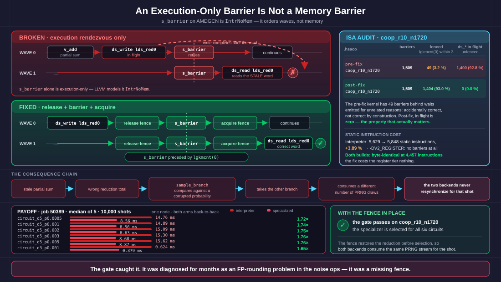
s_barrier with its
ds_write to lds_red0 still in flight; wave 1 passes the same barrier and
reads the stale word. The reduction total is wrong, so sample_branch compares against a
corrupted probability and takes the other side — consuming a different number of PRNG draws
from that shot onward.Covered in full in §12, but it belongs here because it has the same shape:
V2_DUST_EPS was 1e-18 — a
sensible clamp for f64 amplitudes, compared against f32 amplitudes.sample_branch returns without drawing a PRNG value when a branch is dust, so
one side consumed a random number the other did not, and the streams desynchronized
permanently.Found while writing this chapter, and the most instructive of the four because it corrupted the measurements themselves rather than the code.
csrc is the generated C. But the generated C is only half
the translation unit — a list of v2_op_*(...) calls plus #include
"v2_ops.h". Every op body, v2_barrier(), and every tunable constant lives in the
headers, and the headers are not in the hash.
v2_ops.h, and the key does not move: the day-old .hsaco is reused
— and so is its <hsaco>.gate verdict, which is keyed off the
same path.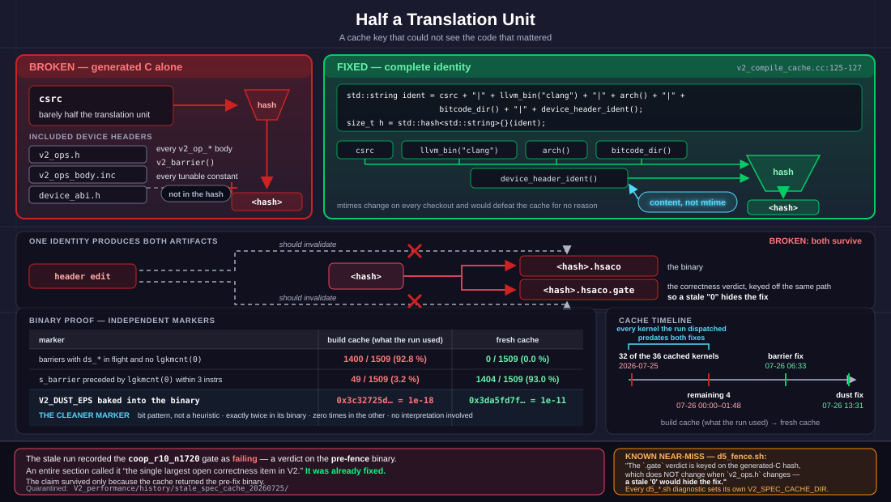
The benchmark run submitted specifically to guarantee that "every performance
claim in the upcoming report reflects shipped, correct code" dispatched pre-fix kernels for
every specialized circuit. Verified on the binaries with llvm-objdump, on two
independent markers:
| marker | build cache (what the run used) | fresh cache |
|---|---|---|
barriers with ds_* in flight and no lgkmcnt(0) (the 150d09f fence) | 1400 / 1509 (92.8%) | 0 / 1509 (0.0%) |
s_barrier preceded by lgkmcnt(0) within 3 instructions | 49 / 1509 (3.2%) | 1404 / 1509 (93.0%) |
V2_DUST_EPS constant baked into the binary | 0x3c32725d… = 1e-18 (pre-2a015fd) | 0x3da5fd7f… = 1e-11 |
1e-18 has high word 0x3c32725d and
1e-11 has 0x3da5fd7f; each appears exactly twice in its
respective binary and zero times in the other. No interpretation involved — the
stale kernel provably contains the pre-fix constant.coop_r10_n1720 gate as
failing — a verdict on the pre-fence binary. The ledger built an entire section
around "the specializer is still incorrect on this shape," listing it as "the single
largest open correctness item in V2." It was already fixed. The claim survived only because
the cache kept handing back the binary from before the fix.d5_fence.sh documents it exactly:.gate verdict is keyed on the generated-C
hash, which does NOT change when v2_ops.h changes — a stale "0" would hide
the fix. Each arm uses a fresh V2_SPEC_CACHE_DIR so every verdict below is recomputed
from scratch.d5_*.sh diagnostic script therefore sets its own
V2_SPEC_CACHE_DIR and got correct results. The workaround was applied per-script
instead of fixing the cache, so the one path that did not set the variable — the
build tree's default cache, used by the benchmark sweep — silently kept serving stale kernels.
A known bug, correctly documented, routed around rather than fixed, in the one place it mattered
most.// Identity of the DEVICE HEADERS the emitted C includes. The generated .c is
// only half the translation unit: every v2_op_* body, v2_barrier(), and every
// tunable constant (V2_DUST_EPS, ...) lives in these headers. [...]
// Content, not mtime: mtimes change on every checkout and would defeat the
// cache for no reason.
std::string ident = csrc + "|" + llvm_bin("clang") + "|" + arch() + "|" +
bitcode_dir() + "|" + device_header_ident(); // 009df59V2_performance/history/stale_spec_cache_20260725/ — it is the evidence for this
section.ClifftAmdgcn.cmake's add_custom_command for each
.hsaco listed DEPENDS "${_src}" — the .c file
alone. CMake does no implicit header scanning for custom commands, so editing
v2_ops.h did not invalidate the output and an incremental build kept linking the
previously-compiled kernel.
.c files are.
coop_interpreter.c is ~150 lines wrapping the entire op library; the headers
are the kernel.72aee12, 07-26 06:36) says where it was caughtget_filename_component(_src_dir "${_src}" DIRECTORY)
file(GLOB _dev_hdrs "${_src_dir}/*.h" "${_src_dir}/*.inc")
...
DEPENDS "${_src}" ${_dev_hdrs}DEPENDS is evaluated at configure time, so a newly
added header still needs a re-configure to be tracked — acceptable, since the three headers
that matter already exist and the failure mode it removes was the one actually observed. The commit
also records the scope constraint explicitly: ClifftAmdgcn.cmake is included only inside
the CLIFFT_ENABLE_MLIR_V2 block, so no SVM or hybrid build path is touched.| § | plausible story | what it actually was | what settled it |
|---|---|---|---|
| 11.1 | -O2 reassociates FP across inlined noise ops | a data race between workgroups | kernel disagreed with itself (V2_GATE_SELFTEST) |
| 11.2 | (see above) | s_barrier orders execution, not memory | ISA audit: 92.8% of barriers unfenced |
| 11.3 | f32 is less precise than f64 | a threshold calibrated for f64, compared against f32 | two-arm A/B on the constant |
| 11.4 | the benchmark measures current code | the cache served day-old binaries | llvm-objdump on the dispatched .hsaco |
| 11.5 | an incremental build rebuilds what changed | DEPENDS omitted the headers that are the kernel | the fence fix measured as ineffective |
The 95.4% figure was quoted from 150d09f's commit message and from
a comment in the script that produced it. Re-running the measurement on the archived binary gave
92.8%, under every definition tried.
// ---- Complex amplitude
// (f32 storage; f64 used
// only in reductions) ----
typedef struct __attribute__((aligned(8)))
{ float re; float im; } CV2Complex;std::complex<double> throughout
src/clifft/svm/svm.h.docs/v2/pre_V2.md:66 — "f32 vs f64 accumulation differs across
backends". That is prose. This section replaces it with an experiment, and the result is
more specific and more actionable than the prose suggests.// The clamp decision must match the SVM's on every call: a branch clamped on
// one side and rolled on the other consumes a PRNG draw the other never did,
// and the two streams never resynchronize. See V2_DUST_EPS.
static inline u8 sample_branch(u64* rng, double p0, double p1, double total) {
double eps = V2_DUST_EPS * total;
if (p1 <= eps) return 0; // <-- returns WITHOUT drawing
if (p0 <= eps) return 1; // <-- returns WITHOUT drawing
return (rng_uniform(rng) * total < p0) ? 0u : 1u;
}rng_uniform. If one backend clamps and the
other does not, the clamping side is one draw behind forever. The PRNG is xoshiro256++: a
shifted stream is not approximately right, it is a different sequence.p0/total is good to only ~1e-6 relative after summing 2^k terms.
When rand*total lands within that window of p0, the two sides take
different branches.
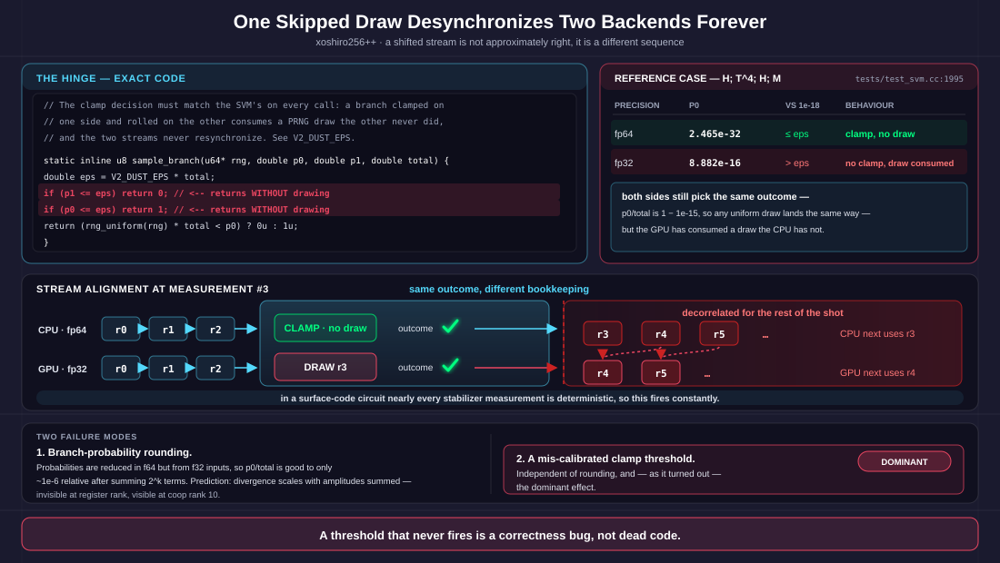
V2_DUST_EPS was copied verbatim from the SVM's
kDustEpsilon = 1e-18 (svm_internal.h:46).
std::complex<double>fp32_eps² = 1.4e-14 — four decades above the threshold.
The reference case is a four-line circuit (H; T^4; H; M, the one
tests/test_svm.cc:1995 pins):
| precision | p0 | vs 1e-18 | behaviour |
|---|---|---|---|
| fp64 | 2.465e-32 | ≤ eps | clamp, no draw |
| fp32 | 8.882e-16 | > eps | no clamp, draw consumed |
p0/total is
1 - 1e-15, so any uniform draw lands the same way — but the GPU has consumed a draw
the CPU has not. In a surface-code circuit nearly every stabilizer measurement is deterministic, so
this fires constantly.A branch probability is a sum of half = 1 << (active_k - 1) squared
fp32 magnitudes, and the rounding error is relative to each amplitude — so the dust
floor does not grow with term count; summing more terms averages the residuals rather than
accumulating them. Measured with V2_performance/tools/dust_floor.py
(p1/total, 2,000 trials per rank):
| rank | median | max |
|---|---|---|
| 1 | 9.7e-15 | 1.2e-13 |
| 4 | 1.3e-14 | 5.8e-14 |
| 12 | 1.42e-14 | 1.6e-14 |
| 26 | 1.42e-14 | 1.5e-14 |
fp32_eps² = 1.42e-14 and
tightens with rank; the widest tail is at low rank (~1.2e-13).
1e-11 sits ~2 decades above that tail and ~5 decades below the smallest
probability f32 can meaningfully carry — margin on both sides. Nothing real is clamped away:
genuine small probabilities (the SVM comment cites R_ZZ angles producing ~1e-16) are
not representable in f32 storage in the first place.V2_DUST_EPS comment — the generating code was never committed."Residual model" is literal: a statistical model, not a simulation of the
kernel's arithmetic. It assumes each analytically-zero output carries a relative error at full
eps — resid_i = a_i · eps · z_i, z_i unit-variance complex
Gaussian — giving p1/total = eps² · Σ|a_i|²|z_i|² / Σ|a_i|²: eps² times
a weighted mean of Exp(1) variables.
dust_floor.py --model residual, its
default.--model butterfly computes fl(fl(u·a) + fl(v·b)) over
fp32-stored amplitudes whose exact fp64 counterparts cancel identically:
| rank | butterfly median | worst tail |
|---|---|---|
| 26 | 2.9e-16 | — |
| 12 | 2.7e-16 | — |
| 1 | exactly zero | 2.7e-15 (2.9e-15 at 20,000 trials) |
--trials1e-11, and it is
worth being precise about why. Every structural fact the threshold rests on holds under
both estimators: the floor is rank-independent, the spread tightens with rank so
the widest tail is at low rank, and the floor is insensitive to circuit depth
(--depth 256 moves the medians by <5%, because accumulated error is itself relative and
divides out of the ratio).1e-11
clears the conservative one by two decades — so it clears the simulated one by nearly
four. What the correction changes is the margin, which is larger than claimed, not the
decision.1234 + rank and so reproduces to the digit:
dust_floor.py --model residual and --model butterfly, defaults
otherwise.Two arms, identical in every respect but the constant (job 50444, node
smci350-rck-g03-f13-21):
| arm | V2_DUST_EPS | d5 (coop, rank 10) shot 0 | d3 (register, rank 4) shot 0 |
|---|---|---|---|
| A | 1e-18 (fp64-calibrated) | gpu=[0] cpu=[1] MISMATCH | gpu=[0] cpu=[0] ok |
| B | 1e-11 (fp32-calibrated) | gpu=[1] cpu=[1] match | gpu=[0] cpu=[0] ok |
2a015fd — a constant-only change; all four
sample_branch call sites are untouched.d5_verify.sh (job 50453) therefore asks two different
questions.Q1 — same-stream, shot-for-shot. Must be EXACT. Twelve seeds × three circuits, comparing the GPU seed against the CPU seed that reproduces the identical 256-bit xoshiro state:
Two independent streams sampling the same distribution should converge as
1/√shots:
| circuit | shots | cpu | gpu | rel gap | z |
|---|---|---|---|---|---|
circuit_d5_p0.001 | 2,000 | 709 | 661 | 6.77 % | −1.60 |
| 10,000 | 3,395 | 3,364 | 0.913 % | −0.46 | |
| 50,000 | 17,005 | 16,862 | 0.841 % | −0.96 | |
| 200,000 | 67,376 | 66,968 | 0.606 % | −1.37 | |
circuit_d3_p0.001 | 2,000 | 52 | 63 | 21.15 % | 1.04 |
| 10,000 | 250 | 270 | 8.00 % | 0.89 | |
| 50,000 | 1,225 | 1,224 | 0.082 % | −0.02 | |
| 200,000 | 4,811 | 4,922 | 2.31 % | 1.14 |
circuit_d3 at 200,000 shots|z| stays
near 1. Reading the percentage alone would suggest a regression at scale.
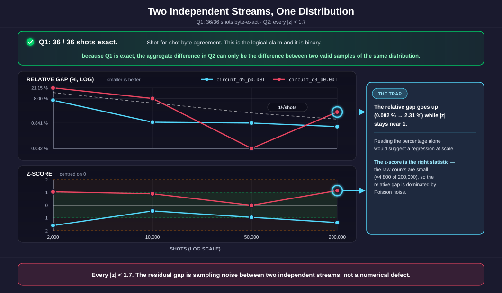
The framing this section inherited — f32 vs f64 — is not what was fixed, and saying so plainly matters more than preserving the tidier story:
log() polynomial, and once that is factored out both
backends widen to f64 in exactly the same three places, deliberately, to stay byte-exact
with the interpreter.A HIP kernel launch is not a doorbell write. hipLaunchKernelGGL
enters the CLR runtime, which validates arguments, resolves the kernel from a module,
packs the kernarg segment into a runtime-managed pool, builds an AQL packet, and
enqueues it on a stream — and hipStreamSynchronize then re-enters the runtime
to wait.
hsa_persistent_dispatch.h documents per-op costs
(alloc_kernarg ~800 ns, allow_gpu_access ~1200 ns,
signal_create ~600 ns, "~3.3 µs saved of ~4.5 µs total") under the label
"measured on MI300X" — a different chip, a different ROCm, and no reproducible
artifact in the tree. There is no HIP-side number at all.
// empty_kernel.c — the smallest possible amdgcn kernel.
//
// The point of an empty kernel is that its GPU execution time is a floor
// (a few hundred ns of wave launch + s_endpgm), so end-to-end launch-to-
// completion latency measured on the host is DOMINATED by the runtime's
// dispatch path. That is exactly the quantity we want to attribute to
// HIP vs raw HSA.
__attribute__((visibility("default")))
__attribute__((amdgpu_kernel))
void bench_empty(unsigned char* out, u64 a, u64 b, u64 c, u64 d) {
u32 t = __builtin_amdgcn_workitem_id_x();
if (t == 0u) out[0] = (unsigned char)(a ^ b ^ c ^ d);
}kernarg_seg=40 — so the packet being timed is demonstrably carrying real
arguments.# compiled with the specializer's flags verbatim (run_bench.sh:28-29)
clang --target=amdgcn-amd-amdhsa -mcpu=gfx950 -ffreestanding -nostdlib \
-nogpulib -std=c23 -O2 -ffp-contract=off -c -emit-llvm -o bench_empty.bc| runtime | mode | what it does |
|---|---|---|
| HSA | naive | alloc kernarg + agents_allow_access + signal_create per dispatch, destroy + free after — what hsa_dispatch_and_wait did before PersistentDispatcher |
| HSA | persistent | kernarg + signal allocated once; packet written per dispatch; signal reset with store_relaxed — V2's hot path |
| HSA | batched16 | 16 packets published back-to-back, doorbell rung once, wait once on the last |
| HIP | sync | <<<>>> + hipDeviceSynchronize |
| HIP | stream_sync | <<<>>> + hipStreamSynchronize |
| HIP | launch_only | <<<>>> only, no sync — HIP's asynchronous enqueue floor |
smci350-rck-g03-d13-21, gfx950, ROCm 7.2.3), 2,000 iterations × 5 reps. The
partition is heterogeneous, so measuring the two arms on different nodes would have been
worthless.| mode | rep 0 | rep 1 | rep 2 | rep 3 | rep 4 | steady state |
|---|---|---|---|---|---|---|
HSA naive | 198,920 | 201,622 | 203,587 | 193,931 | 191,615 | 197,935 |
HSA persistent | 6,333 | 6,329 | 6,323 | 6,325 | 6,320 | 6,326 |
HSA batched16 | 2,326 | 2,318 | 2,318 | 2,318 | 2,318 | 2,320 |
HIP sync | 13,668 | 10,739 | 10,731 | 10,745 | 10,734 | 10,737 |
HIP stream_sync | 10,993 | 11,002 | 10,992 | 11,000 | 10,997 | 10,997 |
HIP launch_only | 2,106 | 2,088 | 2,090 | 2,085 | 2,095 | 2,093 |
persistent, 0.02% for batched16, 0.13% for HIP sync and
0.09% for stream_sync — the two numbers the headline rests on are stable to
two parts in a thousand.
sync rep 0 carries a visible first-touch cost (13,668 → 10,739), which is why
it is excluded from its steady-state column.launch_only spreads 0.44% and naive spreads 6%
(191.6–203.6 µs). The naive path's variance is unsurprising: two KFD ioctls and a
page-table update per dispatch, so it inherits kernel-side scheduling jitter.
| ns/dispatch | vs HIP stream_sync | |
|---|---|---|
HIP stream_sync | 10,997 | 1.00× |
HSA persistent (V2's hot path) | 6,326 | 1.74× faster (−4,671 ns) |
HSA batched16 (not yet used) | 2,320 | 4.74× faster (−8,677 ns) |
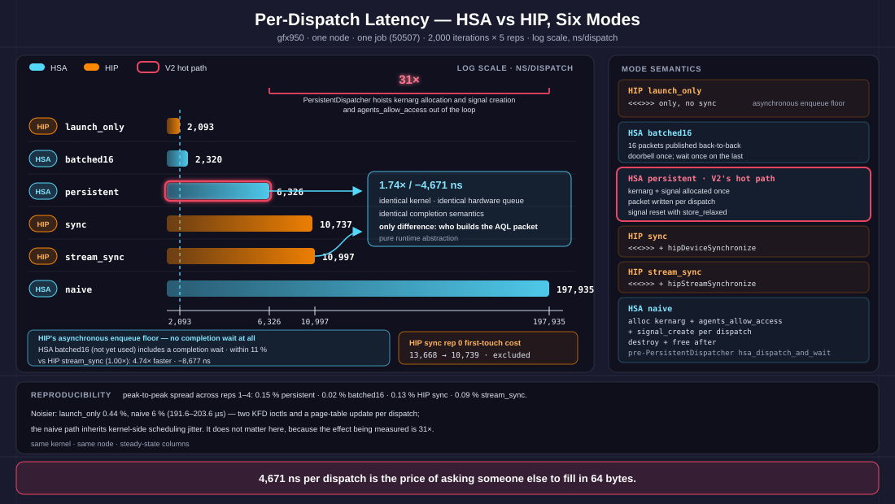
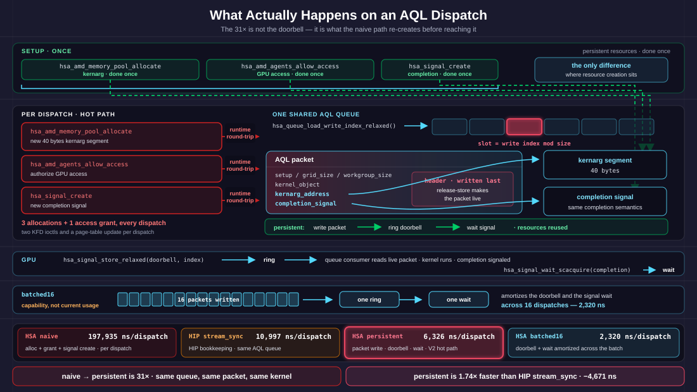
batched16 at 2,320 ns is 2.73× better than
persistent — a larger factor than HSA-vs-HIP's 1.74×.
Amortizing the doorbell and the completion wait across 16 packets beats any per-dispatch
micro-optimization available on either runtime.launch_only
floor of 2,093 ns, the cost of enqueueing without ever waiting. Batched HSA reaches
2,320 ns while still paying for a completion wait — 11% above HIP's
fire-and-forget cost, for strictly stronger semantics.
hsa_persistent_dispatch.h:36-42 carries a cost model — labelled
"measured on MI300X" — that itemizes exactly the operations the naive
mode performs:
/// Eliminated per-dispatch costs (measured on MI300X):
/// - alloc_kernarg: ~800ns (pool allocator + bookkeeping)
/// - allow_gpu_access: ~1200ns (kernel call into KFD for page table update)
/// - signal_create: ~600ns (KFD ioctl for doorbell-backed signal)
/// - signal_destroy: ~400ns (KFD ioctl)
/// - free_kernarg: ~300ns (pool return + bookkeeping)
/// Total saved: ~3.3us per dispatch (of ~4.5us total overhead)The naive mode is a faithful reimplementation of that op
sequence, so the two are directly comparable:
| claim | asserted | measured | error |
|---|---|---|---|
| naive per-dispatch cost | ~4.5 µs total | ~198 µs | 44× understated |
| saving from persistent resources | ~3.3 µs | ~192 µs (198,000 − 6,326) | 58× understated |
persistent floor — subtract it and the eliminated
cost is still ~192 µs against an asserted ~3.3 µs. The gap is not an accounting artifact.hsa_amd_memory_pool_allocate +
hsa_amd_agents_allow_access + hsa_signal_create costs ~198 µs, not
~4.5 µs — agents_allow_access in particular is a KFD call that updates GPU
page tables, and paying that per launch dwarfs everything else in the system.PersistentDispatcher,
and nobody had actually measured it.PERFORMANCE_OPTIONS.md was
written in, and why "host dispatch overhead" was labelled the dominant bottleneck there.Honesty requires answering the obvious follow-up: V2 does one dispatch per
run, not one per shot. The shot loop is inside the kernel (§4's R5 principle), and
n_dispatches is 1 for all 26 tier-5+ circuits in the corpus. So the 4,671 ns saving
is paid once, and its weight is 4,671 ns divided by the whole kernel time:
| circuit | tier | V2 kernel | 4,671 ns as % of it |
|---|---|---|---|
frame_h | register | 12.1 µs | 38.7 % |
four_t | register | 13.1 µs | 35.7 % |
circuit_d3_p0.001 | coop | 220.7 µs | 2.12 % |
qv10 | coop | 1.386 ms | 0.337 % |
circuit_d5_p0.001 | coop | 8.600 ms | 0.054 % |
cultivation_d5 | coop | 16.42 ms | 0.028 % |
qv24_L4_seed42 | global | 7.242 s | 0.00006 % |
n_dispatches is
1 for all 26 circuits — so this is exact, not an assumption.circuit_d5_p0.001 at 14.76 ms and
cultivation_d5 at 30.15 ms from the two f13-21 runs. Those are
interpreter times: both circuits map to coop_r10_n1720, whose gate verdict
was a stale pre-fence failure (§11.4), so V2 fell back to the interpreter for
exactly that shape.
f13-21 runs put
four_t at 13.2 and 10.1 µs and frame_h at 13.6 and 10.0 µs, spanning
34–47%. Read the short-tail figure as ~35–47%, not as a single number.
four_t and frame_h run for 10–13 µs, so a single HIP
dispatch would add 35–47% to their cost, and the ~198 µs naive path would have cost
15–20× the kernel itself (16.4× and 15.1× on the canonical run's
12.1 and 13.1 µs).
The policy is not free, and §11.2 is the invoice.
v2_barrier() was hand-rolled to avoid HIP's
__syncthreads(). HIP's version expands to a release/acquire fence pair around
s_barrier; V2's expanded to a bare s_barrier, which on AMDGCN orders
execution but not memory. The result was a workgroup-level data race exposed at 92.8% of the
specialized kernel's barriers, which corrupted reduction totals, which flipped measurement
outcomes.__syncthreads() had been handling silently.The policy remains right for three reasons that are not about the 1.74×:
four_t pays 35% for a HIP dispatch..hsaco produced by clang --target=amdgcn-amd-amdhsa has no HIP module
to be launched from. HSA is not an optimization here so much as the native interface for
what V2 already builds.The SVM and Hybrid backends still use it (hip_sampler.hip), and the
constraint on this work was explicitly "no CMake, ONLY on the MLIR part, no changes to SVM or
hybrid." What V2 removed is HIP from its own dispatch and device-side synchronization path.
That removal is total and checkable:
$ grep -rn "#include.*hip" src/clifft/gpu/mlir/v2/ # (none)
$ grep -rnE "\bhip[A-Z][A-Za-z]*\s*\(" src/clifft/gpu/mlir/v2/ # (none)
$ grep -rn "__syncthreads" src/clifft/gpu/mlir/v2/
v2_ops.h:130: // ... HIP's __syncthreads() expands to exactly this,__syncthreads reference is the §11.2 post-mortem note explaining what V2's
hand-rolled barrier had been missing. Dispatch instead runs on 14 direct hsa_* call
sites in v2_kernel.cc.batched16 is a benchmark mode, not something V2 doeshsa_dispatch_and_wait (the persistent
shape, 6,326 ns), called exactly once per run. A batched entry point exists —
hsa_dispatch_batch_and_wait, which reserves N packets plus a barrier in a single CAS
— but grep finds no caller outside the dispatch layer itself. It is capability, not
usage.| run | 20260727T125310Z_report-final-allfixtures |
| node | smci350-rck-g03-d13-21 (mi350x-es, gfx950) |
| commit | 79d4463, working tree clean |
| circuits | 26, all paired (V2 + SVM), zero rocprofv3 aborts |
| metric | GPU kernel time, per_dispatch_ns_median from rocprofv3 |
Counters are collected in three separate profiling passes, because the hardware cannot capture them all simultaneously:
| pass | counters |
|---|---|
pmcA | SQ_INSTS_{VALU,SALU,LDS,MFMA}, SQ_WAVES |
pmcB | TCC_HIT_sum, TCC_MISS_sum |
pmcC | GRBM_GUI_ACTIVE, SQ_BUSY_CYCLES, SQ_WAIT_INST_LDS, SQ_WAVE_CYCLES |
mi350x-es is heterogeneous; node.json in every run
directory carries the warning "Do NOT compare ratios across nodes."
wins 18/18 over a 26-circuit corpus because
eight fixture paths had gone stale and rocprofv3 aborted on each.# Fail loudly on a stale fixture path. Job 50785 lost 8 of 26 circuits to
# renamed fixtures: rocprofv3 aborted on every pass, stderr went to
# /dev/null, and the summary reported "wins 18/18" over a silently
# truncated corpus. A missing input must not look like a clean result.
if [ ! -f "$c" ]; then
echo " *** FIXTURE MISSING: $c -- aborting run ***" >&2
exit 1
ficlifft_v2_spec; not one falls back to the
interpreter.| circuit | V2 (µs) | SVM (µs) | V2/SVM | speedup |
|---|---|---|---|---|
surface_d11_t19 | 20,423 | 79,842 | 0.256 | 3.9× |
surface_d11_t15 | 19,589 | 75,947 | 0.258 | 3.9× |
surface_d9_t19 | 11,926 | 45,208 | 0.264 | 3.8× |
surface_d9_t15 | 11,369 | 41,325 | 0.275 | 3.6× |
surface_d7_t19 | 6,247 | 20,152 | 0.310 | 3.2× |
qv10 | 1,386 | 4,350 | 0.319 | 3.1× |
surface_d11_t10 | 37,986 | 81,369 | 0.467 | 2.1× |
surface_d9_t10 | 21,632 | 44,094 | 0.491 | 2.0× |
circuit_d3_p0.001 | 221 | 434 | 0.509 | 2.0× |
surface_d7_t15 | 11,225 | 21,998 | 0.510 | 2.0× |
surface_d7_t10 | 11,044 | 20,674 | 0.534 | 1.9× |
four_t | 13.1 | 22.3 | 0.587 | 1.7× |
surface_d7_t5 | 2,051 | 3,372 | 0.608 | 1.6× |
qv20_L8_seed42 | 1,583,246 | 2,162,954 | 0.732 | 1.4× |
qv21_L8_seed42 | 2,977,386 | 4,045,316 | 0.736 | 1.4× |
frame_h | 12.1 | 16.3 | 0.742 | 1.3× |
cultivation_d5 | 16,421 | 20,901 | 0.786 | 1.3× |
circuit_d5_p0.005 | 8,727 | 10,714 | 0.815 | 1.2× |
circuit_d5_p0.003 | 8,809 | 10,516 | 0.838 | 1.2× |
circuit_d5_p0.002 | 8,730 | 10,319 | 0.846 | 1.2× |
circuit_d5_p0.001 | 8,600 | 10,158 | 0.847 | 1.2× |
qv20_seed42 | 1,804,649 | 2,123,250 | 0.850 | 1.2× |
circuit_d5_p0.0005 | 8,643 | 10,102 | 0.856 | 1.2× |
qv24_L4_seed42 | 7,241,815 | 8,211,443 | 0.882 | 1.1× |
qv22_L6_seed42 | 3,179,445 | 3,243,842 | 0.980 | 1.0× |
qv23_L5_seed42 | 6,086,167 | 6,146,952 | 0.990 | 1.0× |
| circuit | V2/SVM time | VALU ratio | SALU ratio | SALU reduction |
|---|---|---|---|---|
four_t | 0.587 | 0.432 | 0.110 | 9.1× |
surface_d9_t19 | 0.264 | 0.482 | 0.137 | 7.3× |
surface_d11_t15 | 0.258 | 0.482 | 0.138 | 7.3× |
surface_d11_t19 | 0.256 | 0.490 | 0.138 | 7.2× |
circuit_d3_p0.001 | 0.509 | 0.817 | 0.150 | 6.7× |
circuit_d5_p0.001 | 0.847 | 0.639 | 0.156 | 6.4× |
qv10 | 0.319 | 0.445 | 0.198 | 5.1× |
frame_h | 0.742 | 0.429 | 0.218 | 4.6× |
qv20_seed42 | 0.850 | 0.821 | 0.345 | 2.9× |
qv24_L4_seed42 | 0.882 | 0.863 | 0.361 | 2.8× |
On the surface and circuit_d5 families the reduction is larger in
absolute terms as well, by a factor of 3.8×–7.3×:
| circuit | ΔSALU | ΔVALU | |ΔSALU| / |ΔVALU| |
|---|---|---|---|
circuit_d3_p0.001 | −6 M | −0.8 M | 7.31 |
surface_d11_t10 | −17,152 M | −2,832 M | 6.06 |
surface_d7_t15 | −4,603 M | −761 M | 6.05 |
cultivation_d5 | −4,053 M | −693 M | 5.85 |
circuit_d5_p0.001 | −2,029 M | −352 M | 5.76 |
surface_d11_t19 | −8,691 M | −2,275 M | 3.82 |
qv20_seed42 removes
9,094 M scalar instructions against 37,752 M vector ones, a ratio of 0.24. The
scalar ratio still improves more (0.345 vs 0.821), but the QV circuits are so
vector-dominated in absolute terms that the vector reduction is the larger number.
for (u32 pc = 0; pc < num_instrs; ++pc) {
CV2Instr ins = instrs[pc]; // a load
u32 k = st->active_k; // another load
switch (ins.opcode) { ... } // a jump tablePer bytecode instruction that is: an address computation (pc * 40,
needing a 64-bit multiply — see §7.3), a global_load, a
v_readfirstlane to move the operand to the scalar unit, an s_load
of active_k, a bounds compare, and a jump through a switch table.
.s files that produced §7's
VALU numbers shows SALU falling in all eight cases (1.26×–3.09×), and the
corpus shows it falling faster than VALU on 26 of 26 circuits.
stats.csv had a v_alu column and no s_alu column —
the falsifying number was one grep away and structurally invisible.§7 ended with a taxonomy — what specialization folds and what it cannot. The corpus tests it.
circuit_d5 family — 0.786–0.856circuit_d5 would be the corpus's weakest
coop-tier result. It is.The QV circuits have better VALU and SALU ratios than circuit_d5
(0.82–0.86 and 0.34–0.36 against 0.64–0.66 and 0.16), yet worse time ratios.
Instruction count is not what limits them.
const uint64_t amp = 1ull << flat.peak_rank;
const uint64_t bytes_per_wg = amp * sizeof(GpuComplex) + (amp / 2) * sizeof(GpuComplex);
const uint64_t budget = 32ull << 30; // 32 GB
uint64_t wgs = budget / bytes_per_wg;
if (wgs < 1) wgs = 1; // rank 26+: at least one resident wg
if (wgs > 2048) wgs = 2048;
global_grid_wgs = static_cast<uint32_t>(wgs);
if (global_grid_wgs > kNumXCDs) global_grid_wgs -= global_grid_wgs % kNumXCDs;GpuComplex is {float re; float im;} — against a 32 GB budget, capped at
2,048 and rounded down to a multiple of kNumXCDs = 8
(v2_kernel.cc:436-445).| rank | bytes/wg | predicted wgs | measured wgs |
|---|---|---|---|
| 20 | 12 MB | 2,048 (capped) | 2,048 ✓ |
| 21 | 24 MB | 1,360 | 1,360 ✓ |
| 22 | 48 MB | 680 | 680 ✓ |
| 23 | 96 MB | 336 | 336 ✓ |
| 24 | 192 MB | 168 | 168 ✓ |
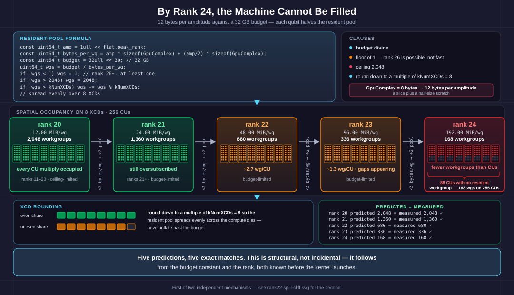
The three weakest circuits — qv22_L6 (0.980), qv23_L5
(0.990), qv24_L4 (0.882) — are exactly the three whose kernels spill. This
does not require interpreting a performance counter: the AMDHSA metadata note in each
.hsaco states it directly.
| rank | circuit | ratio | .vgpr_count | .agpr_count | .vgpr_spill | .sgpr_spill | scratch |
|---|---|---|---|---|---|---|---|
| 20 | qv20_seed42 | 0.850 | 104 | 40 | 0 | 0 | 96 |
| 20 | qv20_L8 | 0.732 | 106 | 42 | 0 | 0 | 112 |
| 21 | qv21_L8 | 0.736 | 104 | 40 | 0 | 0 | 112 |
| 22 | qv22_L6 | 0.980 | 128 | 64 | 136 | 762 | 448 |
| 23 | qv23_L5 | 0.990 | 128 | 64 | 199 | 662 | 576 |
| 24 | qv24_L4 | 0.882 | 128 | 64 | 152 | 594 | 480 |
# llvm-readelf --notes, rank 22
.vgpr_count: 128 .agpr_count: 64
.vgpr_spill_count: 136 .sgpr_spill_count: 762
.private_segment_fixed_size: 448rocprofv3 reports 52, 56 and 64 VGPRs for these kernels where the
metadata says 104, 106 and 128. The scratch sizes match one-to-one across the two
sources (96/112/112/448/576/480), so these are certainly the same kernels.
rocprofv3 reports
Accum_VGPR_Count = 0 where the metadata reports 40–64 AGPRs, so the profiler is
evidently reporting a different quantity — an allocation granule or an architected-only
count — rather than contradicting the binary.
.hsaco and are the authoritative
ones.amp_capacity crossing 2²². The mechanism inside LLVM's allocator has not been
isolated, and §16 keeps that as the top open item.SQ_WAVE_CYCLES / SQ_WAVES. That quotient is not admissible here.
SQ_WAVES is collected in pass
pmcA and SQ_WAVE_CYCLES in pass pmcC: different executions
of the kernel.
SQ_WAVES does not
match launch geometry on precisely these circuits: SVM launches an identical 512-workgroup,
256-thread grid on qv20, qv21_L8 and qv22_L6 and reports
8,832, 10,240 and 8,000 waves respectively, where the geometry implies 2,048 in all
three. On the other 20 circuits SQ_WAVES equals workgroups × 4
exactly.
Three counters are worth reporting for what they rule out.
cadd/csub/cmul
on 2-element complex values with a strided access pattern — not a GEMM. Any proposal to
bring the matrix cores to bear on this workload is unsupported by this corpus, and the zero
is measured rather than assumed.qv24_L4_seed42's SVM
counter block was missing from the truncated job 50785, and was recorded as unmeasured
rather than rounded down to zero.| tier | V2 LDS | SVM LDS | ratio |
|---|---|---|---|
| coop | 13,312 B | 23,040 B | 0.578 |
| global | 1,024 B | 8,704 B | 0.118 |
| register | 0 B | 0 B | — |
lds_v[1024]
and lds_red_scratch[512] at 8 B each is 12,288 B, plus
lds_red0/lds_red1 (128 B) and lds_state, for 13,064 B in the
ELF — and the global-tier kernel declares neither amplitude array, because at rank
> 10 the amplitudes live in HBM. Its ELF figure is 784 B of lds_state and
lds_shot alone (v2_specializer.cc:204-205). The 8.5× gap is therefore
a consequence of the tier's design, not a tuning result.rocprofv3's LDS_Block_Size, which is
the ELF .group_segment_fixed_size rounded up to a 256-byte granule: 13,064 →
13,312 and 784 → 1,024. Both columns are rounded the same way, so the ratios are
unaffected. See §9.3 for how this granule was mistaken for a code change.SQ_INSTS_LDSIf the story above is right, a single derived quantity should predict the measured
ratio. SQ_BUSY_CYCLES — cycles during which the SQ has work — is the
natural candidate, and unlike §14.5's rejected quotient it is a ratio of the same counter
between two arms, not a division across passes.
circuit_d5_p0.0005 (28.2%), circuit_d5_p0.001 (27.2%),
circuit_d5_p0.002 (26.4%), circuit_d5_p0.003 (25.0%),
circuit_d5_p0.005 (21.2%) and cultivation_d5 (17.9%) — the entire d5
family, and nothing else.
The circuit_d5 family wins, but its L2 hit rate is still
depressed: 91.1–92.1% for V2 against 97.6–98.4% for SVM, and
cultivation_d5 shows 90.9% against 98.9%.
VERIFIED_FACTS.md:158).| circuit | V2 L2 hit | SVM L2 hit | V2/SVM time |
|---|---|---|---|
four_t | 52.3 % | 74.4 % | 0.587 |
frame_h | 52.2 % | 66.8 % | 0.742 |
{ "run_id": "20260727T125310Z_report-final-allfixtures",
"label": "report-final-allfixtures",
"commit": "79d4463",
"branch": "mlir-v2",
"dirty": false,
"v2_specialize": true,
"n_circuits": 26 }
{ "slurm_job_id": 50793,
"node": "smci350-rck-g03-d13-21",
"partition": "mi350x-es",
"arch": "gfx950",
"note": "mi350x-es is heterogeneous. Do NOT compare ratios across nodes." }d13-21. The absolute timings in §1–§10 come
from f13-21. V2/SVM ratios within this job are sound — both arms,
same job, same node, interleaved. The absolute microsecond figures must not be compared against
those chapters.
v2_specialize: true is not decoration.
V2_SPECIALIZE is opt-in; with it unset the harness measures the interpreter,
and the resulting numbers look like a 2–3× regression that is really a configuration
error. The manifest records the flag so a reader can tell which kernel was measured.Per circuit, per backend, five rocprofv3 invocations — plus
one untraced warm-up whose purpose is to move .hsaco compilation and gating
off the traced path:
prof() { # $1=outdir rest=cmd
local outdir="$1"; shift; local cmd="$*"
mkdir -p "$outdir"
eval "$cmd" >/dev/null 2>&1 # warm: compile+gate the .hsaco OFF the traced path
timeout 300 rocprofv3 --kernel-trace --stats --output-format csv -d "$outdir/kt" -- $cmd
timeout 300 rocprofv3 --hsa-core-trace --stats --output-format csv -d "$outdir/hsa" -- $cmd
timeout 300 rocprofv3 --pmc $PMC_A --output-format csv -d "$outdir/pmcA" -- $cmd
timeout 300 rocprofv3 --pmc $PMC_B --output-format csv -d "$outdir/pmcB" -- $cmd
timeout 300 rocprofv3 --pmc $PMC_C --output-format csv -d "$outdir/pmcC" -- $cmd
}# bench_all.sh:81-83 — split because the hardware cannot collect them simultaneously
PMC_A="SQ_WAVES,SQ_INSTS_VALU,SQ_INSTS_MFMA,SQ_INSTS_SALU,SQ_INSTS_LDS"
PMC_B="TCC_HIT_sum,TCC_MISS_sum"
PMC_C="SQ_BUSY_CYCLES,GRBM_GUI_ACTIVE,SQ_WAIT_INST_LDS,SQ_WAVE_CYCLES"qv24_L4, chosen so that each run completes inside the 300 s
timeout (bench_all.sh:90-113). Shot count therefore differs between
circuits but is identical between the two backends of any one circuit, which is what the ratio
requires.| # | circuit | tier | shots | V2 (µs) | SVM (µs) | V2/SVM |
|---|---|---|---|---|---|---|
| 1 | circuit_d3_p0.001 | register | 20,000 | 220.7 | 433.6 | 0.509 |
| 2 | circuit_d5_p0.0005 | coop | 10,000 | 8,643.0 | 10,101.6 | 0.856 |
| 3 | circuit_d5_p0.001 | coop | 10,000 | 8,599.8 | 10,158.4 | 0.847 |
| 4 | circuit_d5_p0.002 | coop | 10,000 | 8,729.9 | 10,318.6 | 0.846 |
| 5 | circuit_d5_p0.003 | coop | 10,000 | 8,808.8 | 10,516.1 | 0.838 |
| 6 | circuit_d5_p0.005 | coop | 10,000 | 8,727.0 | 10,713.5 | 0.815 |
| 7 | cultivation_d5 | coop | 20,000 | 16,421.3 | 20,900.8 | 0.786 |
| 8 | four_t | register | 20,000 | 13.1 | 22.3 | 0.587 |
| 9 | frame_h | register | 20,000 | 12.1 | 16.3 | 0.742 |
| 10 | qv10 | coop | 20,000 | 1,385.6 | 4,349.7 | 0.319 |
| 11 | qv20_L8_seed42 | global | 2,000 | 1,583,246.4 | 2,162,954.0 | 0.732 |
| 12 | qv20_seed42 | global | 2,000 | 1,804,648.5 | 2,123,250.3 | 0.850 |
| 13 | qv21_L8_seed42 | global | 2,000 | 2,977,385.5 | 4,045,316.0 | 0.736 |
| 14 | qv22_L6_seed42 | global | 1,000 | 3,179,444.7 | 3,243,841.8 | 0.980 |
| 15 | qv23_L5_seed42 | global | 1,000 | 6,086,167.4 | 6,146,952.4 | 0.990 |
| 16 | qv24_L4_seed42 | global | 500 | 7,241,815.1 | 8,211,443.4 | 0.882 |
| 17 | surface_d11_t10 | coop | 10,000 | 37,986.3 | 81,369.2 | 0.467 |
| 18 | surface_d11_t15 | global | 5,000 | 19,589.4 | 75,946.8 | 0.258 |
| 19 | surface_d11_t19 | global | 5,000 | 20,423.1 | 79,842.1 | 0.256 |
| 20 | surface_d7_t10 | coop | 10,000 | 11,044.2 | 20,673.5 | 0.534 |
| 21 | surface_d7_t15 | coop | 10,000 | 11,225.3 | 21,997.6 | 0.510 |
| 22 | surface_d7_t19 | global | 5,000 | 6,246.9 | 20,152.3 | 0.310 |
| 23 | surface_d7_t5 | register | 20,000 | 2,051.1 | 3,372.2 | 0.608 |
| 24 | surface_d9_t10 | coop | 10,000 | 21,631.9 | 44,093.9 | 0.491 |
| 25 | surface_d9_t15 | global | 5,000 | 11,368.7 | 41,325.4 | 0.275 |
| 26 | surface_d9_t19 | global | 5,000 | 11,925.6 | 45,207.5 | 0.264 |
per_dispatch_ns_median; each backend issues
exactly one dispatch of the kernel under test.The geometric mean is the correct average for a set of ratios, and the one that does not let a single large speedup dominate:
| tier | n | geomean | best | worst |
|---|---|---|---|---|
| register | 4 | 0.606 | 0.509 | 0.742 |
| coop | 11 | 0.633 | 0.319 | 0.856 |
| global | 11 | 0.508 | 0.256 | 0.990 |
| all | 26 | 0.573 | 0.256 | 0.990 |
constexpr uint32_t kRegMaxRank = 4;
constexpr uint32_t kCoopMaxRank = 10;
const Tier tier = flat.peak_rank <= kRegMaxRank ? REG
: flat.peak_rank <= kCoopMaxRank ? COOP : GLOBAL;peak_rank alone
(v2_kernel.cc:312-321).surface_d11_t10 runs coop while
surface_d11_t15 and surface_d11_t19 run global — same code
distance, different tier — and surface_d7_t5 runs on the register tier
despite its name suggesting kinship with the other surface_d7_* circuits.
| circuit | V2 LDS | SVM LDS | V2 scr | SVM scr | V2 VGPR | SVM VGPR | SGPR |
|---|---|---|---|---|---|---|---|
circuit_d3_p0.001 | 0 | 0 | 1,024 | 4,480 | 64 | 60 | 112 |
four_t | 0 | 0 | 656 | 4,480 | 32 | 60 | 112 |
frame_h | 0 | 0 | 656 | 4,480 | 32 | 60 | 112 |
surface_d7_t5 | 0 | 0 | 1,040 | 4,480 | 64 | 60 | 112 |
qv10 | 13,312 | 23,040 | 0 | 8 | 36 | 64 | 112 |
circuit_d5_* (5) | 13,312 | 23,040 | 336 | 8 | 64 | 64 | 112 |
cultivation_d5 | 13,312 | 23,040 | 336 | 8 | 64 | 64 | 112 |
surface_* coop (4) | 13,312 | 23,040 | 288 | 8 | 64 | 64 | 112 |
surface_* global (5) | 1,024 | 8,704 | 320–352 | 56 | 64 | 64 | 112 |
qv20_seed42 | 1,024 | 8,704 | 96 | 56 | 52 | 64 | 112 |
qv20_L8 | 1,024 | 8,704 | 112 | 56 | 56 | 64 | 112 |
qv21_L8 | 1,024 | 8,704 | 112 | 56 | 52 | 64 | 112 |
qv22_L6 | 1,024 | 8,704 | 448 | 56 | 64 | 64 | 112 |
qv23_L5 | 1,024 | 8,704 | 576 | 56 | 64 | 64 | 112 |
qv24_L4 | 1,024 | 8,704 | 480 | 56 | 64 | 64 | 112 |
lds_v[1024] + lds_red_scratch[512]
at 8 B each = 12,288 B, plus lds_red0/lds_red1 (128 B) and
lds_state — 13,064 B in the ELF.
lds_state and lds_shot
(v2_specializer.cc:185-186, :204-205). SVM provisions 23,040 / 8,704 B for
the same tiers.
rocprofv3 reports LDS_Block_Size rounded up to a
256-byte granule: 13,064 → 13,312 and 784 → 1,024. The ELF
.group_segment_fixed_size is the declared size; the profiler figure is the
dispatch allocation. This table quotes the profiler throughout, for consistency with its other
columns.rocprofv3's, and it disagrees with the binaries.hsaco files reports
104–128 VGPRs plus 40–64 AGPRs where the profiler reports 52–64 and
Accum_VGPR_Count = 0.
.hsaco metadata,
and those are authoritative.| circuit | VALU V2 | VALU SVM | ratio | SALU V2 | SALU SVM | ratio |
|---|---|---|---|---|---|---|
circuit_d3_p0.001 | 3.79e+06 | 4.64e+06 | 0.817 | 1.10e+06 | 7.30e+06 | 0.150 |
circuit_d5_p0.0005 | 6.16e+08 | 9.69e+08 | 0.636 | 3.74e+08 | 2.40e+09 | 0.156 |
circuit_d5_p0.001 | 6.25e+08 | 9.77e+08 | 0.639 | 3.76e+08 | 2.40e+09 | 0.156 |
circuit_d5_p0.002 | 6.40e+08 | 9.92e+08 | 0.646 | 3.79e+08 | 2.41e+09 | 0.158 |
circuit_d5_p0.003 | 6.55e+08 | 1.00e+09 | 0.652 | 3.83e+08 | 2.41e+09 | 0.159 |
circuit_d5_p0.005 | 6.82e+08 | 1.03e+09 | 0.663 | 3.89e+08 | 2.42e+09 | 0.161 |
cultivation_d5 | 1.36e+09 | 2.06e+09 | 0.663 | 7.78e+08 | 4.83e+09 | 0.161 |
four_t | 6.76e+04 | 1.56e+05 | 0.432 | 2.10e+04 | 1.90e+05 | 0.110 |
frame_h | 4.13e+04 | 9.63e+04 | 0.429 | 2.10e+04 | 9.63e+04 | 0.218 |
qv10 | 5.02e+08 | 1.13e+09 | 0.445 | 1.20e+08 | 6.05e+08 | 0.198 |
qv20_L8_seed42 | 1.28e+11 | 1.54e+11 | 0.830 | 5.39e+09 | 1.57e+10 | 0.344 |
qv20_seed42 | 1.74e+11 | 2.11e+11 | 0.821 | 4.79e+09 | 1.39e+10 | 0.345 |
qv21_L8_seed42 | 2.40e+11 | 2.88e+11 | 0.835 | 1.01e+10 | 2.93e+10 | 0.345 |
qv22_L6_seed42 | 1.96e+11 | 2.30e+11 | 0.855 | 8.15e+09 | 2.33e+10 | 0.349 |
qv23_L5_seed42 | 2.73e+11 | 3.18e+11 | 0.861 | 1.16e+10 | 3.24e+10 | 0.357 |
qv24_L4_seed42 | 2.31e+11 | 2.68e+11 | 0.863 | 9.86e+09 | 2.73e+10 | 0.361 |
surface_d11_t10 | 4.14e+09 | 6.98e+09 | 0.594 | 2.76e+09 | 1.99e+10 | 0.139 |
surface_d11_t15 | 2.09e+09 | 4.34e+09 | 0.482 | 1.38e+09 | 9.99e+09 | 0.138 |
surface_d11_t19 | 2.19e+09 | 4.46e+09 | 0.490 | 1.40e+09 | 1.01e+10 | 0.138 |
surface_d7_t10 | 1.11e+09 | 1.82e+09 | 0.609 | 7.26e+08 | 5.00e+09 | 0.145 |
surface_d7_t15 | 1.15e+09 | 1.91e+09 | 0.602 | 7.56e+08 | 5.36e+09 | 0.141 |
surface_d7_t19 | 5.89e+08 | 1.18e+09 | 0.500 | 3.74e+08 | 2.63e+09 | 0.142 |
surface_d7_t5 | 2.62e+07 | 3.56e+07 | 0.735 | 9.15e+06 | 5.50e+07 | 0.167 |
surface_d9_t10 | 2.30e+09 | 3.83e+09 | 0.601 | 1.52e+09 | 1.07e+10 | 0.142 |
surface_d9_t15 | 1.17e+09 | 2.38e+09 | 0.492 | 7.64e+08 | 5.44e+09 | 0.140 |
surface_d9_t19 | 1.22e+09 | 2.54e+09 | 0.482 | 7.87e+08 | 5.75e+09 | 0.137 |
| circuit | L2 hit V2 | L2 hit SVM | busy ratio | GRBM ratio | time ratio |
|---|---|---|---|---|---|
surface_d11_t19 | 97.4 % | 79.3 % | 0.255 | 0.254 | 0.256 |
surface_d11_t15 | 98.7 % | 98.3 % | 0.257 | 0.257 | 0.258 |
surface_d9_t19 | 97.4 % | 90.0 % | 0.253 | 0.254 | 0.264 |
surface_d9_t15 | 98.2 % | 98.6 % | 0.267 | 0.269 | 0.275 |
surface_d7_t19 | 97.0 % | 98.8 % | 0.281 | 0.288 | 0.310 |
qv10 | 99.6 % | 99.8 % | 0.291 | 0.289 | 0.319 |
surface_d11_t10 | 98.7 % | 99.1 % | 0.465 | 0.465 | 0.467 |
surface_d9_t10 | 98.4 % | 99.1 % | 0.479 | 0.481 | 0.491 |
circuit_d3_p0.001 | 95.3 % | 98.1 % | 0.505 | 0.442 | 0.509 |
surface_d7_t15 | 97.7 % | 99.1 % | 0.485 | 0.489 | 0.510 |
surface_d7_t10 | 97.7 % | 99.0 % | 0.501 | 0.504 | 0.534 |
four_t | 52.3 % | 74.4 % | 0.496 | 0.533 | 0.587 |
surface_d7_t5 | 99.2 % | 98.9 % | 0.587 | 0.595 | 0.608 |
qv20_L8_seed42 | 69.8 % | 69.8 % | 0.687 | 0.683 | 0.732 |
qv21_L8_seed42 | 69.4 % | 69.5 % | 0.692 | 0.686 | 0.736 |
frame_h | 52.2 % | 66.8 % | 0.712 | 0.391 | 0.742 |
cultivation_d5 | 90.9 % | 98.9 % | 0.645 | 0.650 | 0.786 |
circuit_d5_p0.005 | 91.1 % | 97.8 % | 0.642 | 0.654 | 0.815 |
circuit_d5_p0.003 | 91.4 % | 97.6 % | 0.629 | 0.641 | 0.838 |
circuit_d5_p0.002 | 91.6 % | 97.7 % | 0.623 | 0.638 | 0.846 |
circuit_d5_p0.001 | 91.9 % | 98.0 % | 0.617 | 0.644 | 0.847 |
qv20_seed42 | 69.9 % | 69.9 % | 0.769 | 0.765 | 0.850 |
circuit_d5_p0.0005 | 92.1 % | 98.4 % | 0.615 | 0.643 | 0.856 |
qv24_L4_seed42 | 68.3 % | 68.5 % | 0.885 | 0.879 | 0.882 |
qv22_L6_seed42 | 68.9 % | 69.0 % | 0.970 | 0.983 | 0.980 |
qv23_L5_seed42 | 68.0 % | 68.1 % | 1.004 | 1.002 | 0.990 |
SQ_BUSY_CYCLES and GRBM_GUI_ACTIVE agree
with each other almost everywhere — two independent activity counters, from the same
pass, tracking within a few percent on 24 of 26 circuits. They agree with kernel time at
Pearson r = 0.942 (§14.7).frame_h (busy 0.712, GRBM 0.391) and circuit_d3
(0.505 / 0.442) — the two shortest kernels in the corpus at 12 µs and 221 µs, where
GRBM_GUI_ACTIVE includes ramp-up the SQ counter does not.sbatch V2_performance/tools/bench_all.sh report-final-allfixtures--gpus=1 and the 01:55:00
walltime are #SBATCH directives in the script itself. V2_SPECIALIZE=1 is
set by the script rather than left to the caller, because unset it measures the bytecode
interpreter and reports a fake 2–3× regression.20260726T182433Z_report-final-postdust and every run before it, but was never
committed — it lived in /tmp and was lost."
manifest.json records dirty —
every figure above is void if it reads true. For job 50793 it reads
false. The expected denominator is 26 and summary.md states the actual
one.| approach | outcome | |
|---|---|---|
| SVM | one interpreter kernel, three tiers, bytecode in HBM | the baseline. Correct, general, and paying interpretation cost on every instruction of every shot. |
| Hybrid | interpreter + per-circuit HIP source compiled at runtime | worked, did not push execution further. Compilation cost and HIP's launch path ate the gain. |
| V1 | per-circuit MLIR → single monolithic kernel, no interpreter, no runtime | failed. Unrolling the circuit into straight-line IR produced kernels too large to compile or schedule. |
| V2 | per-circuit specialization over a runtime, direct C → amdgcn, HSA dispatch | 0.573 geometric mean against SVM, 26 of 26 circuits faster. |
What disappears is the interpreter's per-instruction overhead:
pc * 40, a 64-bit multiplyglobal_load of the instruction wordv_readfirstlaneactive_k reloads_load from the state blockSQ_INSTS_MFMA is 0 across all 52 cells — 26 circuits
× 2 backends.
SQ_BUSY_CYCLES
ratio predicts kernel-time ratio at Pearson r = 0.942, and GRBM_GUI_ACTIVE — an
independent activity counter — agrees with SQ_BUSY_CYCLES within a few percent on
24 of 26.The rank ceiling is real and it is register spilling (§14.5, §10). Above rank 21 the win collapses to 0.88–0.99. The cause is visible in the AMDHSA metadata rather than inferred from counters:
| rank | spill (VGPR / SGPR) | ratio |
|---|---|---|
| 20–21 | 0 / 0 | 0.732–0.850 |
| 22 | 136 / 762 | 0.980 |
| 23 | 199 / 662 | 0.990 |
| 24 | 152 / 594 | 0.882 |
§7's taxonomy predicted this circuit-by-circuit before the corpus was measured:
amp_capacity crossing
2²² — and the emitted C is otherwise structurally identical. The cause is inside
LLVM's allocator and has not been isolated.
batched16 is conditional, not a missed winrocprofv3 VGPR discrepancyAccum_VGPR_Count = 0 where the .hsaco metadata reports
104–128 plus 40–64 AGPRs, for kernels whose scratch sizes match
one-to-one.
SQ_WAVES on persistent global-tier kernelsEvery quantitative claim here is backed by an artifact in the tree: a run
directory under V2_performance/runs/, a .s file under lowering/,
or a line of committed source.
V2_performance/VERIFIED_FACTS.md is the ledger — sixteen
audit passes, each recording what was checked, what was wrong, and a method note about how the
error survived.The instruction this report was written under was trust data, not text, and it was aimed first at the report itself. The audits found, among others:
| a headline that said 20 wins where the data said 26 |
| a claimed mechanism (scalar substitution) contradicted by a counter the project had already collected |
| a residual attributed to the wrong circuit family because the surrounding argument predicted it would land there |
| a per-wave cost computed by dividing counters from two different profiling passes |
| a hedge about spilling written against evidence sitting in the binaries |
sbatch V2_performance/tools/bench_all.sh <label>manifest.json reads "dirty": true, or
the circuit count is not 26, the run is void.